直近1週間の更新
3/31 (火)
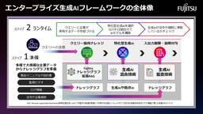
Fujitsu ナレッジグラフ拡張RAG技術のご紹介 #6 ナレッジ公開 ～単なるデータから「使えるナレッジ」の共有へ～  fltech - 富士通研究所の技術ブログ
fltech - 富士通研究所の技術ブログ
こんにちは。人工知能研究所の菊月・成田・菊地・宮原です。 富士通では企業における生成AIの活用促進に向けて、多様かつ変化する企業ニーズに柔軟に対応し、企業が持つ膨大なデータや法令への準拠を容易に実現する「エンタープライズ生成AIフレームワーク」を開発し、2024年7月よりAIサービス Fujitsu Kozuchi (R&D) のラインナップとして順次提供を開始いたしました。 エンタープライズ生成AIフレームワークは、企業のお客様が特化型生成AIモデルを活用する上で生じる、 企業で必要とされる大規模データの取り扱いが困難 生成AIがコストや応答速度をはじめとする多様な要件を満たせない 企業規則…
38分前
3/30 (月)

廃墟で朽ち果てた「VHSテープ」を修復、そこに映っていたものとは？  ナゾロジー
ナゾロジー
古びた廃墟の床に転がる、泥まみれのVHSテープ。 それはただのゴミのように見えますが、中にはかつて誰かが記録した「時間」が閉じ込められています。 では、その中には何が写されているのでしょうか？ この疑問に真正面から挑んだのが、アメリカ・ジョージア州のYouTuber、ブレイディ・ブランドウッド（Brady Brandwood）さんです。 彼は10年以上も風雨にさらされていたVHSテープやCDを回収し、実際に修復・再生する実験を行いました。 実際の映像とともに見てみましょう。
3時間前

実はボイジャー1号は69KBのメモリと8トラックのテープレコーダーで今も動作している 2
2 GIGAZINE
GIGAZINE
地球の情報を載せて宇宙空間に放たれた宇宙探査機「ボイジャー1号」は、宇宙で地球から最も遠いところにある人工物です。このボイジャー1号に搭載されたメモリは、近年のスマートフォンのわずか数十万分の1ほどしかないにもかかわらず、発射から50年近く経過した時点でも動き続けています。続きを読む...
4時間前

「最古の犬を発見」5000年ぶん更新された「人類最初の相棒」の記録 ナゾロジー
イギリスのロンドン自然史博物館（NHM）とオックスフォード大学の研究チームによって、氷河期の終わりごろにはすでに「犬」が存在し、現代のヨーロッパからトルコにかけて広く分布していた可能性が示されました。 これまで確実な「遺伝学的に確認された最古の犬の証拠」は約1万900年前とされてきましたが、今回の研究で約1万5800年前まで5000年ほど一気にさかのぼったのです。 しかもトルコで見つかった犬のDNAを詳しく調べると、遠く離れたイギリスの犬と驚くほど近い親戚関係にあることが分かりました。 オックスフォード大学の発表において研究者たちは、「犬が初期の人間社会の暮らしを大きく変える、いわばゲームチェンジャーだった可能性もある」と述べています。 犬はいつ、どのようにして人間の世界に入り込んだのでしょうか？ この研究成果は2026年3月25日に科学誌『Nature』で発表されました。
4時間前

Wi-Fiの途切れがちな地中まで磁場を使って通過する通信技術が開発される、地下での遭難時の連絡や救助が可能に 2 GIGAZINE
通常の無線通信がほとんど使えない地下100mまで通信可能なワイヤレス技術を韓国の研究機関が開発しました。この技術は電波ではなく磁場を利用することで地中でも安定した通信を実現しており、災害時の救助や地下インフラ管理などへの応用が期待されています。続きを読む...
5時間前

『劇場版「鬼滅の刃」無限城編 第一章 猗窩座再来』が興行収入400億円を突破、観客動員数は2734万人に 2 GIGAZINE
ロングラン大ヒット中の『劇場版「鬼滅の刃」無限城編 第一章 猗窩座再来』が、2025年7月18日(金)に劇場公開されてから254日ｑをかけて、興行収入400億円突破を達成したことがわかりました。映画前作『劇場版「鬼滅の刃」無限列車編』に続く大記録達成です。続きを読む...
5時間前

最新のペニス研究で「男性のGスポット」の意外な姿が発見された 2 ナゾロジー
スペインのサンティアゴ・デ・コンポステーラ大学（USC）で行われた研究によって、陰茎の感覚は亀頭の裏側にある小さな領域に偏っており、そこが「男性版Gスポット」のような場所を形成していることが示されました。 今回の研究は、昔から「そこが敏感だ」と語られてきた感覚を、気分や体験談ではなく、神経レベルで調べられました。 さらに研究では、その偏りは胎児の時期から作られていく可能性があると記されています。 私たちが“感じやすい場所”は、生まれる前からどのように配線されていくのでしょうか。 研究内容の詳細は2025年9月19日に『Andrology』にて発表されました。
5時間前

人間の脳からヒントを得た新しいチップはAIのエネルギー消費量を大幅に削減できる可能性 2 GIGAZINE
ケンブリッジ大学の研究チームが、人間の脳からヒントを得た新しいチップを開発しました。このチップは従来のデバイスと比べてスイッチング電流が約100万分の1に抑えられるため、実現すればAIのエネルギー消費量を大幅に削減可能です。続きを読む...
6時間前

Sakana AI、90年代検索システム「Namazu」との名称被り「知らなかった」 開発者に相談→快諾に 50ITmedia AI＋ 最新記事一覧
Sakana AIは、AIモデルシリーズ「Namazu」の名称が、日本語の全文検索システム「Namazu」と同一だった件について、同システムの開発者である高林哲さんに使用の許諾を得たと報告した。
6時間前

アスリートの輝き汚す視線 AI加工や拡散、より深刻化 「100％集中できなかった」 2ITmedia AI＋ 最新記事一覧
アスリートたちを傷つける行為が後を絶たない。誹謗中傷、盗撮、パワーハラスメント…。理想的な競技環境の創出は喫緊の課題だ。リスペクト（尊敬）をアクション（行動）へと変えることが第一歩となる。その一歩を踏み出してみよう。
6時間前

2026年3月30日のヘッドラインニュース 1 GIGAZINE
和歌山港と徳島港を結ぶフェリーを運行している南海フェリーの親会社・南海電鉄が、2028年3月末日をもってフェリー事業から撤退する方針を明らかにしました。続きを読む...
7時間前
「第五回AIアートグランプリ」開催、AIアーティストの育成を目指す／『AIでクリエィティブな世界に一石を投じる事を期待したい』 窓の杜
AIアートグランプリ実行委員会は3月27日、「第五回AIアートグランプリ」の開催を発表した。4月以降、応募要項などを発表し、8月1日にエントリー開始を予定している。
7時間前

50年前のレシピをもとに再現した「日清のどん兵衛 きつねうどん／天ぷらそば クラシック」を現代のどん兵衛と食べ比べてみた 7 GIGAZINE
「日清のどん兵衛」の発売50周年を記念して、日清食品グループの研究所で見つかった50年前のレシピをもとに当時の味を再現した「日清のどん兵衛 きつねうどん クラシック(東・西)」と「日清のどん兵衛 天ぷらそば クラシック」が、2026年3月30日(月)に登場しました。50年前の味わいがどんなものだったのか気になったので、現代のどん兵衛と食べ比べて違いを探してみました。続きを読む...
7時間前

『映画ドラえもん』V5達成で30億突破！『鬼滅の刃』は史上2作目の400億到達、新作『鬼の花嫁』『プペル』がランクイン  シネマトゥデイ
シネマトゥデイ
2026年3月27日から3月29日の週末映画動員ランキングが興行通信社より発表され、『映画ドラえもん 新・のび太の海底鬼岩城』が5週連続で1位に輝いた。今週は2本の新作がTOP5に食い込んでいる 。
7時間前
Rails: n_plus_one_control gem README（翻訳） 1 TechRacho
TechRacho
概要 MITライセンスに基づいて翻訳・公開いたします。 リポジトリ: palkan/n_plus_one_control: RSpec and Minitest matchers to prevent N+1 queries problem 原文更新日: 2026年01月28日（23c25c1） ライセンス: MIT 見出しのインデントは適宜変更しています。 Rails: n_plus_one_control gem README（翻訳） N+1クエリ問題を防ぐためのRSpecおよびMinitest用のマッチャーです。 🔗 DBクエリのアサーション用に別のgemが必要な理由 db-query-matchersやr […]The post Rails: n_plus_one_control gem README（翻訳） first appeared on TechRacho.
7時間前
ゴールデンウィークのサポート窓口休業のお知らせ  Mackerel ブログ #mackerelio
Mackerel ブログ #mackerelio
誠に勝手ながら、以下の期間はサポート窓口を休業させていただきます。 休業期間 2026年4月29日（水）から 5月7日（木）まで お問い合わせへの対応について 休業期間中にいただいたお問い合わせは、5月8日（金）以降に順次対応いたします。 4月28日（火）までにいただいたお問い合わせにつきましても、内容によっては5月8日（金）以降の対応となる場合がございます。予めご了承ください。 ご不便をおかけいたしますが、ご理解のほどよろしくお願いいたします。
7時間前

実写ドラマ「トゥームレイダー」撮影中断 ララ・クロフト女優が負傷 シネマトゥデイ
実写ドラマ「トゥームレイダー」の主人公ララ・クロフト役を務めている女優のソフィー・ターナーが負傷したため、撮影が中断となった。
7時間前
「Google 翻訳アプリ」のライブ翻訳機能が日本はじめ70以上の地域にも対応／話者の個性に合わせた合成音声をAIが生成。iOS版でも利用可能に 2窓の杜
Googleは3月27日（日本時間）、iOS/Android版「Google 翻訳」アプリにおいて、ヘッドホンを通じてリアルタイムの翻訳を聞くことができるライブ翻訳機能の提供地域を拡大した。
8時間前

地球外の金属で武器を作っていた「古代文明」を発見 ナゾロジー
約3000年前、中国のある古代文明は「宇宙から落ちてきた金属」を使って武器のような道具を作っていたようです。 中国・四川大学の研究チームは、三星堆（さんせいたい）遺跡から出土した鉄製遺物を分析し、それが隕石由来の金属で作られている可能性が高いことを明らかにしました。 この発見は、この地域で鉄を作る技術が広まる以前に、宇宙から届いた鉄を使っていたことを示す重要な証拠とのことです。 研究の詳細は2026年2月17日付で学術誌『Archaeological Research in Asia』に掲載されています。
8時間前

高橋一生主演×渡辺一貴監督『脛擦りの森』柘植伊佐夫のデザイン画公開！ シネマトゥデイ
高橋一生 主演の映画『脛擦りの森』（すねこすりのもり）（4月10日公開)より、本作の人物デザイン監修・衣裳デザインを務めた柘植伊佐夫による貴重なデザイン画5点と場面写真が公開された。
8時間前
ミズノの新ゴルフクラブ、覚悟の1年販売延期 「最後は社長判断だった」 (小売りの未来)  日経ビジネス電子版 最新記事
日経ビジネス電子版 最新記事
ミズノの新ゴルフクラブ「JPX ONE」は発売を1年延期して完成した。初期モデルは他社より1ヤード弱しか遠くへ飛ばず、経営判断で改良を決断。ヘッド構造などを再設計し、最終的に4～9ヤードの飛距離差を実現した。ミズノのドライバー復活を懸けた開発の舞台裏に迫る。
8時間前
ソフトバンクG「チーム後藤」解剖 6兆円融資引き出す少数精鋭部隊 (ソフトバンクG チーム後藤) 日経ビジネス電子版 最新記事
ソフトバンクグループの後藤芳光CFOは「経営にシンクロする財務」を掲げる。孫正義会長兼社長に寄り添いアクセルとブレーキを使い分ける。チーム後藤の全貌を探った。
8時間前
サイバーエージェント山内社長「10年の計」 アニメ業界にゼロから食い込む (サイバーエージェント、後発組の挑戦) 日経ビジネス電子版 最新記事
サイバーエージェント2代目社長の山内隆裕氏がけん引するアニメ＆IP事業。地道にノウハウを積み上げるだけでなく、「自由と自己責任」という社風が外部から有力なクリエーターも呼び込む。築き上げたIPエコシステムとは。
8時間前
シャドーイングだけでは通用しない 「話せる英語」をつくる4つの科学的アプローチ (その英語学習法は間違い) 日経ビジネス電子版 最新記事
6カ月間以上シャドーイングを続けていたにもかかわらず、実際の商談でうまく英語を話せなかったという質問者。今回は科学的アプローチをもとに、話せる英語を身に付けるためのポイントを解説します。
8時間前
会社は簡単に辞められない 自分の心を守り仕事の成果を出すには (ビジネスTopics) 日経ビジネス電子版 最新記事
臨床心理士の中島美鈴さんが『会社でいちいち傷つかない 認知行動療法が教える、心を守り成果を出すための考え方と行動』をもとに行ったオンラインイベントをまとめました。認知行動療法のメソッドを紹介し、視聴者からの悩みに答えました。
8時間前
JERA奥田社長「世界の脱炭素化は止まらない」 中国の再エネ巨額投資を注視 (JERAの覚悟) 日経ビジネス電子版 最新記事
「LNG火力の安定供給を土台に、次世代エネルギーへも着実に投資を続ける」。JERAの奥田社長は、日本のエネルギーの現実解をこう語る。
8時間前
被災者の状況確認に「マイナンバーカード」を活用 現場での実証進む (日経クロステック) 日経ビジネス電子版 最新記事
災害対策にデジタル技術を利用する取り組みが進められています。そのうちの1つが、マイナンバーカードの活用です。デジタル庁は2026年2月下旬、三重県名張市で実証を実施しました。その模様を報告します。
8時間前
AI活用でビジネスを変革する 各企業の実践事例 (テーマ別まとめ記事) 日経ビジネス電子版 最新記事
不動産、小売り、製造、医療、観光、IR――。業種を越えてAI活用が加速している。本まとめ記事では、LIFULLやイオン、ミスミ、ミシュランなど国内外9社の実践事例を紹介。業務効率化にとどまらず、新たな価値創造や人材育成にまでAIの活用領域が広がっている実態を追う。
8時間前
米中・日中対立で高まるレアアース・リスク 先端製品に必要な重要資源巡る戦い (テーマ別まとめ記事) 日経ビジネス電子版 最新記事
レアアースとは、ハイテク製品や再生可能エネルギー技術に不可欠な17の希少な元素の総称。米中貿易戦争の中、中国政府は2025年4月4日、7種類のレアアースを輸出規制の対象に加えると発表した。日本や世界の安全保障に深く関わるレアアースの重要性と、供給リスクに対する日本の戦略について取り上げた過去記事をピックアップする。
8時間前
海洋デジタルツインの社会実装へ ~複数種藻場を対象とした藻場定量化技術の実証実験~ fltech - 富士通研究所の技術ブログ
こんにちは。コンバージングテクノロジー研究所の鈴木と、Human Digital Twin 事業部の伊集院です。 私たちは、海の環境をデジタル上に再現し、保全や産業活用につなげる『海洋デジタルツイン』の研究開発に取り組んでいます。 その一環として、海藻などがCO₂を吸収する量を定量的に評価し、カーボンクレジットとして活用するための藻場定量化技術を開発しています。 これまでに、単一の海藻種からなる藻場を対象として、国内のブルーカーボンクレジット制度であるJブルークレジットの認証を取得するなど、技術の有効性を実証してきました （参考：宇和島発！漁協・地域・自治体が連携したアマモ再生ブルーカーボンプ…
8時間前

リコー、“日本語で推論”できるマルチモーダルLLMを開発 「Gemini 2.5 Pro」に匹敵うたう 30ITmedia AI＋ 最新記事一覧
リコーは、推論のプロセスを日本語化したマルチモーダルLLM「Qwen3-VL-Ricoh-32B-20260227」を開発したと発表した。320億パラメータを持ち、複雑な図表を含む日本語の資料も読解できるという。
8時間前
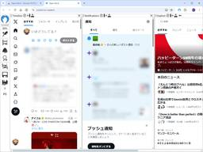
「X Pro」（TweetDeck）の代わりに ～マルチカラム型「X」クライアント「Open-Deck」／Google Chrome/Firefox対応、スパム対策「Clean-Spam-Link-Tweet」とも連携【レビュー】 94窓の杜
「X」（Twitter）での情報収集に不可欠ともいえるマルチカラム型の公式クライアントアプリ「X Pro」（TweetDeck）が突如、高額な「プレミアムプラス」プランを契約しなければ使えなくなり、困っている人は少なくないだろう。「X」の開発者は1、2週間以内により強力なツールをリリースするとしているが、それが待てないユーザーもいるはずだ。
8時間前

GitLab創業者がガンとの闘病で新企業設立へ、どのような経緯でこうなったのか？ 1 GIGAZINE
ソースコードリポジトリ・GitLabを2021年に上場させた共同創設者のシド・シブランディ氏が、骨のガンである骨肉腫と診断されました。シブランディ氏は、さまざまな治療を受けながら自ら集めた10テラバイトに及ぶ膨大なデータを解析し、最先端の個別化医療を並行して進めることで病状を劇的に改善させ、自らの治療アプローチを他の患者にも広めるべく、500ドル(約7万5000円)程度で実施可能な全ゲノム解析などの技術を活用した新たな企業の設立を着々と進めています。続きを読む...
8時間前

OpenAIがコーディング支援AIツール「Codex」用プラグインを発表、Gmail・Googleドライブ・GitHub・Figma・Notion・Slack・Cloudflare・Boxなど20以上のサービスとの連携を実現 3 GIGAZINE
OpenAIが2021年から展開しているコーディング支援用のAIツール「Codex」向けに多数のプラグインを発表しました。これにより、Gmailをはじめとした20以上のサービスとデフォルトで連携させることが可能となります。続きを読む...
9時間前

AI活用のコストは「勤怠ツールと同じ」──コロプラが経営指標との接続をあえて急がないワケ 1ITmedia AI＋ 最新記事一覧
国内企業の中でもAI活用の浸透度が高い部類のコロプラ。しかしAIサービスを使うには当然コストがかかるため、コスト減か売上増への寄与がなければ利益を圧迫することにもなりかねない。コロプラはどう考えてAI活用を推進しているのか。
9時間前
Monthly Tech Report 2026年2月  ZOZO TECH BLOG
ZOZO TECH BLOG
ZOZO開発組織の2026年2月分の活動を振り返り、ZOZO TECH BLOGで公開した記事や登壇・掲載情報などをまとめたMonthly Tech Reportをお届けします。 ZOZO TECH BLOG 2026年2月は、前月のMonthly Tech Reportを含む計16本の記事を公開しました。特に次の3記事は反響も大きく、とても多くの方に読まれています。いずれも「Claude Code」に関連した記事です。ぜひご一読ください。 techblog.zozo.com techblog.zozo.com techblog.zozo.com 登壇 CA DATA NIGHT#8 〜ZOZ…
9時間前
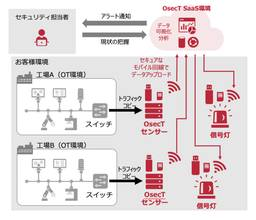
現場の「気づかない」を解決！OsecTの新機能：信号灯連携のご紹介 8
 NTT docomo Business Engineers' Blog
NTT docomo Business Engineers' Blog
こんにちは、開発業務のため部屋にいる信号灯と寝食苦楽をともに過ごしているイノベーションセンターの石禾（GitHub：rhisawa）です。 2026年3月に、OsecTの新機能として、パトライト社信号灯との連携機能をリリースしました。「メール通知では異常に気づきにくい」という課題を解決するために開発した、信号灯連携機能とその実現アーキテクチャについてご紹介します。 既存ネットワークの設定変更を回避し、導入のハードルを下げるためにモバイル回線を活用した構成を採用した点が大きな特徴です。開発にあたっての技術的な工夫を解説していきます。 OsecTとは 信号灯連携機能について なぜ「信号灯」なのか？…
9時間前
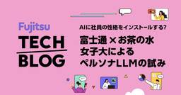
AIに社員の性格をインストールする？富士通×お茶の水女子大によるペルソナLLMの試み fltech - 富士通研究所の技術ブログ
こんにちは．富士通 コンバージングテクノロジー研究所の山並と，データ&セキュリティ研究所の志賀です． 私たちは，お茶の水女子大学との共同研究で「AIに社員の性格をインストールする」というユニークな試みに挑戦しています． その目的は，多様な社員の「声なき声」を拾い上げ，より良い組織をつくること．鍵となるのが，人の心を科学的に測定する心理学のアンケート（心理尺度）です． この記事では，まず心理学の知見で見えないバイアスを可視化する研究を紹介し，続いてその知見を応用したペルソナLLM開発についてお話しします．
9時間前
フリーのオフィス統合環境「LibreOffice 26.2.2」と「LibreOffice 25.8.6」が同時公開／PDF書き出し時の問題などの不具合を修正 窓の杜
The Document Foundationは3月26日（中央ヨーロッパ時間）、「LibreOffice 26.2.2」「LibreOffice 25.8.6」を公開した。
10時間前

『めまい』女優、シドニー・スウィーニーが自分を演じることに不満「上半身が突き出し過ぎ」 シネマトゥデイ
映画『めまい』などの女優キム・ノヴァクが、『恋するプリテンダー』『マダム・ウェブ』などのシドニー・スウィーニーが新作で自身を演じることへの不満を The Times に表明した。
10時間前

「豊臣兄弟！」信長の“モーニングコール”が恐ろしすぎた シネマトゥデイ
仲野太賀主演による大河ドラマ「豊臣兄弟！」（NHK総合・毎週日曜午後8:00ほかで放送中）の第12回では、織田信長（小栗旬）を取り巻く様々な思惑が浮上し始めるなか、藤吉郎（秀吉／池松壮亮）の女遊びをかぎつけた信長のある行動が注目を浴びた（※一部ネタバレあり）。
10時間前

イラン系ハッカー集団「ハンダラ」がFBI長官カシュ・パテルの個人メールを取得したと主張し一部をオンラインで公開 2 GIGAZINE
イラン政府の支援を受けているハッカー集団「ハンダラ」が、FBI(連邦捜査局)のカシュ・パテル長官の個人メールアカウントに侵入したと主張しました。司法省はFBI長官への攻撃があったことを認めています。続きを読む...
11時間前

SNSはポピュリズムや政治的二極化を助長するがチャットAIは人々を極端な意見から遠ざけて穏健な立場に導く可能性 2 GIGAZINE
各国でポピュリズムや政治的二極化が進む中、SNSによる情報環境の変化がその原因のひとつであると指摘されています。経済紙のフィナンシャル・タイムズでコラムニスト兼主任データレポーターを務めるジョン・バーン・マードック氏が、チャットAIはSNSとは対照的に人々を極端な意見から遠ざけ、より穏健な立場に導く可能性が高いと分析しました。続きを読む...
11時間前
みんなで楽しくハッカーになろう！社内CTFを開催しました 21 エムスリーテックブログ
エムスリーテックブログ
こんにちは！ 1月に入社したセキュリティチームの坂梨です。この記事はセキュリティチームブログリレーの1日目の記事です。 みなさん、セキュリティはつらく大変なものだと思っていませんか？ セキュリティはどうしても「義務としてやるもの」というイメージがつきまといがちです。 しかし私にとっては、セキュリティはまるで古代遺跡を発掘する冒険です。システムという遺跡の奥深くには、まだ誰にも発見されていない脆弱性というお宝が眠っています。エラーメッセージ、レスポンスヘッダー、ソースコードなどは遺跡の壁に刻まれた碑文の断片であり、それらを読み解いてお宝の場所を特定できたときの達成感は一度味わうとクセになります。…
11時間前
Google、スマホのカメラの映像と音声でAIに質問できる「Search Live」を日本で提供開始／多言語対応した新しい音声モデル「Gemini 3.1 Flash Live」を使用 1窓の杜
米Googleは3月27日（日本時間）、Android/iOSの「Google」アプリで「Search Live」が日本語対応したと発表した。本機能は、Google検索のAIモードでカメラに映っているものを認識し、リアルタイムで音声の質問に答えたり、関連するWebサイトのリンクを提示する機能。今回のアップデートで、日本をはじめとする200以上の国と地域でGoogleのAIモードと会話できるようになる。
11時間前
福岡Rubyist会議05レポート —— ブースとスポンサーセッションを提供  SmartHR Tech Blog
SmartHR Tech Blog
プロダクトエンジニアの @udzura です。 SmartHRは、2026年2月28日に福岡で開催された「福岡Rubyist会議05」に協賛してブースを出し、スポンサートークを行いました。私もスタッフ（福岡Rubyist会議のスタッフと、SmartHRのスタッフを兼任です！）として参加してきました。この記事では、当日聴講したセッションの内容をレポートします。 福岡Rubyist会議05とは ブースについて スポンサーセッションについて 本編セッションのレポート Keynote：SQLQL とは何だったのか（yancyaさん） Panel Discussion：「コミュニティの垣根を越えよう」（…
11時間前

AI生成の恋愛リアリティ番組風TikTok動画「フルーツ・ラブアイランド」が超絶大ヒット中、各話の平均再生数は1000万回以上を記録 1 GIGAZINE
TikTokやYouTubeで公開されているAIで生成された果物たちによる恋愛リアリティ番組風の動画が「Fruit Love Islan(フルーツ・ラブアイランド)」です。公開からわずかひと月足らずで投稿アカウントである@ai.cinema021のフォロワー数は300万を超え、各話の平均再生数は1000万回超という人気っぷりとなっています。続きを読む...
11時間前

AIの巧みな“おべっか”が人間の判断力を損なう可能性──スタンフォード大の新論文 1ITmedia AI＋ 最新記事一覧
AIは悩みを相談するユーザーに対し、有害な内容であっても過度に肯定・迎合する傾向があると、スタンフォード大学の研究者らが研究結果を論文で発表した。ユーザーはAIの客観性を誤認しやすく、自己中心的な態度を強めるリスクがあるとしている。研究チームは、対人スキルの低下や依存を招く安全上の問題として、厳格な規制の必要性を提言している。
11時間前

AIは個人的な相談を求めるユーザーに過度なお世辞や肯定的な対応をする傾向があるという研究結果、ユーザーが倫理に反する行為をした場合でも高い割合で迎合的な反応を示す 2 GIGAZINE
チャットAIは親しみやすさや共感性を備えた人間的な応答をするようトレーニングされており、その結果ユーザーにこびへつらうようになって信頼性が低下するという研究結果や、AIは人間よりもおべっかを使う確率が50％以上高いという研究結果があります。スタンフォード大学の研究者らが2026年3月26日に発表した論文では、主要な大規模言語モデル(LLM)におけるおべっか傾向が測定され、ユーザーが非倫理的行動をとった場合でさえAIは人間よりも約50％もユーザーの立場を肯定する傾向にあることが示されました。続きを読む...
11時間前
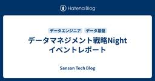
データマネジメント戦略Night イベントレポート  Sansan Tech Blog
Sansan Tech Blog
はじめに こんにちは。技術本部 CTO室の中村です。 先日、3/19にオフラインイベント「データマネジメント戦略Night - 4社のリアルを語る会」をSansan本社にて開催しました。 本記事では、イベントの様子を簡単に振り返ります。 イベントレポート 本イベントでは、Sansan、GA technologies、kubell、レバレジーズの4社の方によるLTとクロストークセッション、そして懇親会を行いました。 開催告知から想定を超える多数の参加登録を頂き、当日は50名を超える方にご参加いただき、大変盛況なイベントとなりました。 LT1. 不動産テックのデータマネジメント戦略 株式会社 GA…
12時間前

アメリカ式BBQの“ウマそうさ”、日米のXユーザーをつなぐ一大ムーブメントに きっかけはとあるAI機能 マスク氏も感嘆 31ITmedia AI＋ 最新記事一覧
日米のXユーザーが、よく焼けたおいしそうな肉を共通項としてつながり始めている。きっかけは日本人Xユーザーが投稿したイラストや写真。生成AIによって登場したとある機能が助けになり、米国ユーザーにも拡散。今や日米のユーザー同士がバーベキューに関する画像やコメントを投稿し合う一大ムーブメントになっている。
12時間前
Ryzen 7 9800X3D＋RADEON RX 9070XT搭載でコスパ重視のフルタワーPCがトップ！【マウスコンピューター売れ筋PCランキング［独立型GPU搭載モデル編 2026/3/30版］】 窓の杜
本記事では、マウスコンピューターの売れ筋PCを紹介しています。なお、順位、価格、構成は随時変動しており、最新情報はリンク先にてご確認ください。
12時間前

12作品で“AI不使用”なのに「AI生成」と誤表記 電子書籍配信「クロスフォリオ出版」が経緯明かす 2ITmedia AI＋ 最新記事一覧
BookLiveは、クリエイター向け電子書籍配信サービス「クロスフォリオ出版」で配信した一部の作品で、制作に生成AIを使っていないにもかかわらず、AIを利用しているとの誤表記が生じた件について、経緯などを明かした。
12時間前

メモリ関連の市場価値が約1000億ドル減少しマイクロン株は15％下落、GoogleによるTurboQuant圧縮アルゴリズムの発表でAIのメモリ使用量が激減するとの報道から 2 GIGAZINE
2026年3月27日週、アメリカのメモリチップ関連株が大幅に下落し、市場価値が約1000億ドル(約15兆9800億円)近く失われたことが分かりました。直前にGoogleが発表した、メモリ使用量を既存の6分の1に削減する技術の影響が大きいとみられています。続きを読む...
12時間前

Anthropicのブログ記事の下書きから新型AIモデル「Claude Mythos」の存在が発覚、Anthropicは事実を認め「性能面で飛躍的な進歩を遂げた」新たなAIモデルのテストを実施していると発表 2 GIGAZINE
AI企業のAnthropicが、開発中の新しいAIモデル「Claude Mythos」に関する情報を誤って公開状態にしていたことが判明しました。この事実はコンテンツ管理システム(CMS)の構成ミスによるデータ漏えいによって明らかになったもので、AnthropicはClaude Mythosの存在を認め、記事作成時点では一部の顧客を対象にテストを行っていると説明しています。続きを読む...
13時間前

学生が「新種の鳥」をガラパゴス諸島で発見 1 ナゾロジー
ダーウィンの進化論を形づくる舞台となったガラパゴス諸島。 すでに徹底的に研究され尽くした場所と思われがちですが、そこにはいまだ解かれていない謎が残されています。 そして今回、その謎に挑んだのは、一人の大学院生でした。 米サンフランシスコ州立大学（SFSU）の大学院生エズラ・メンダレス氏は、長年「ありふれた鳥」とされてきたガラパゴスのサギに注目。 その結果、この鳥が実はこれまで知られていなかった独立した新種であることを明らかにしたのです。 研究の詳細は2026年3月16日付で学術誌『Molecular Phylogenetics and Evolution』に掲載されています。 【新種として認定されたガラパゴス・ラヴァサギの実際の画像がこちら】
13時間前

同居するカップルは腸内細菌の約30％を共有している、パートナーとの細菌共有が健康に及ぼす影響とは？ 2 GIGAZINE
パートナーと同居する際は生活する家やライフスタイル、趣味などを共有するだけでなく、お互いの体表や体内に生息する「微生物」も共有することになります。イギリスのノッティンガム・トレント大学でバイオサイエンスの准教授を務めるコナー・ミーハン氏らが、パートナーと微生物を共有することの影響について解説しました。続きを読む...
13時間前

「万年3位」を挽回できるか？ 国内ITサービス4社が力を入れるGoogle Cloudのポテンシャル ITmedia AI＋ 最新記事一覧
富士通やNEC、日立製作所、NTTデータの国内ITサービスベンダー大手4社がこぞってGoogle Cloudとのパートナーシップに注力し始め、Google Cloudのエンタープライズ向け事業が勢いづいている。何が起きているのか。
13時間前

「新サービスは死に、"狂気"が生まれる」 ニコニコを創ったカワンゴ氏&ひろゆき氏に聞く、AI時代のサービス開発 4ITmedia AI＋ 最新記事一覧
新サービスが簡単にコピーされ、競争力を失うAI時代。個人開発は「狂気」になると、ひろゆき氏は言う。
13時間前

日曜劇場「GIFT」山口智子と玉森裕太が初共演で“仲良し親子”に 4月12日スタート シネマトゥデイ
TBSで4月12日（日）よる9時からスタートする、堤真一主演の日曜劇場「GIFT」のキャストとして、山口智子と玉森裕太の出演が発表された。二人は本作が初共演作で、物語の鍵を握る“仲良し親子”を演じる。
13時間前

Claudeを運用するAnthropicの有料会員数は2026年に入って半年前の2倍以上に増加している 2 GIGAZINE
チャットAIの「Claude」のほかコーディングAIの「Claude Code」、AIの社会課題を研究する機関「Anthropic Institute」などで知られるAI企業のAnthropicが有料会員数を急速に伸ばしていて、半年以内で2倍以上に増加していることが明らかになりました。続きを読む...
13時間前

AI時代におけるタスク管理を考える  松尾研究所テックブログのフィード
松尾研究所テックブログのフィード
こんにちは，松尾研究所の尾崎です．25卒でデータサイエンティストをやっています．最近，AIエージェントがコードを書き，メールを要約し，会議を記録してくれる時代になりました．Claude Codeを複数同時に走らせたり，AIに調査を任せながら別の作業をしたり——気づけば，自分の仕事のやり方そのものがかなり変わってきています．しかし，そもそも「何をやるか」を管理するタスク管理そのものは，まだ従来のやり方のままという方も多いのではないでしょうか．本記事では，自分自身のタスク管理環境を紹介しつつ，AI時代に「マルチタスク」の意味がどう変わっていきそうかを考え，AIがタスク管理にどこまで関与で...
13時間前
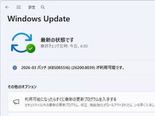
Windows 11の定例外パッチに注目、Microsoftアカウントに関する問題を修正 ～窓の杜アクセスランキング［2026/3/23～2026/3/29]【記事アクセスランキング】 窓の杜
前週に閲覧数の多かった記事を、上位10位までレポートします。
13時間前

BlueskyなどATプロトコル向けのカスタムフィードを対話形式でかんたんに作れる「Attie」 1 GIGAZINE
Blueskyが分散型SNSプロトコルのATプロトコルで動くエージェント型ソーシャルアプリおよびカスタムフィードビルダー『Attie』を発表しました。続きを読む...
13時間前

ホワイトハウスのアプリが4.5分ごとにユーザーの正確な位置情報を追跡しているとの指摘 18 GIGAZINE
ドナルド・トランプ政権が公開したホワイトハウス公式アプリについて、ユーザーの正確な位置情報を4分30秒ごとに確認して第三者のサーバーへ同期するコードが埋め込まれていることを、ソフトウェア開発者が指摘しました。続きを読む...
13時間前

PS5・PS5 Pro・PlayStation Portal リモートプレーヤーが全世界で値上げ、4月2日からPS5も約10万円になりゲーマーからは怒りの声 GIGAZINE
ソニー・インタラクティブエンタテインメント(SIE)がPlayStation 5(PS5)・PlayStation 5 Pro(PS5 Pro)・PlayStation Portal リモートプレーヤーの希望小売価格を改定すると発表しました。値上げは2026年4月2日(木)から実施されます。続きを読む...
13時間前

ローマ闘技場の「女性」猛獣戦士の”初の姿”が報告される 1 ナゾロジー
古代ローマでは闘技場で人間や動物による剣闘士試合が行われていました。 剣闘士同士が戦う場面がよく知られていますが、人間がヒョウやクマなどの猛獣と向き合う見世物も人気を集めていました。 今回、アメリカ・カリフォルニア大学バークレー校（UCB）の研究者により、こうした猛獣戦を描いたモザイクの写しが再検討され、女性の猛獣戦士を示す初の視覚資料である可能性が示されました。 研究は2026年3月22日付で『The International Journal of the History of Sport』に掲載されています。
13時間前

映画「プロジェクト・ヘイル・メアリー」がAmazon MGMスタジオ史上最大の興行収入を記録 1 GIGAZINE
アンディ・ウィアーによる同名小説の実写映画化作品である映画「プロジェクト・ヘイル・メアリー」が、2026年3月20日に公開されました。同作は公開からわずか数日で、Amazonが所有する製作・配給会社であるAmazon MGMスタジオにとって過去最高の興行収入を記録しています。続きを読む...
13時間前
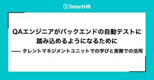
QAエンジニアがバックエンドの自動テストに踏み込めるようになるために —— タレントマネジメントユニットでの学びと実務での活用 1 SmartHR Tech Blog
品質保証本部タレントマネジメントユニット（以下、タレマネユニット）のhigashiです！ 本記事ではユニットで直近取り組んだバックエンドの自動テスト関連のスキル強化と活用の取り組みを紹介します。タレマネユニットが普段どんな取り組みをしているかの参考になれば幸いです。 取り組みの背景・取り組み開始前のメンバーのスキル感 タレマネユニットでは私たちの目指す姿にむけて「プロダクト特性や状況に合わせた本質的な価値を見極め、その価値を守り、より最大化できるよう最適な手法を考え実行していく」ことを推し進めています。*1 管掌範囲の中でも特に事業インパクトが大きいチームに対してQAエンジニアをアサインし、チ…
14時間前
「Qt」の「Windows 10」対応は2031年まで ～「Qt 6.12 LTS」が最後の対応バージョン／ 3窓の杜
フィンランドのQt Groupは3月27日（現地時間）、「Qt」の「Windows 10」対応を終了する計画を発表した。「Qt 6.12」がWindows 10をサポートする最後の「Qt」リリースになるという。
14時間前
DEIM2026（第18回データ工学と情報マネジメントに関するフォーラム）に参加しました！  DMM Developers Blog
DMM Developers Blog
はじめに DEIM2026の概要 参加レポート 一般発表（技術報告） スポンサーブース インタラクティブセッション [1F-04] ターゲットベクトルを用いた SPLADE への明示的な知識注入による概念マッピング効果検証 [5G-01] マルチドメイン推薦のための協調知識グラフとGNNによる知識転移手法 おわりに はじめに こんにちは！データサイエンスグループの森と田中です。私たちは2025年にDMM.comに新卒入社し、データサイエンスグループで検索・レコメンド機能の改善に取り組んでいます。グループの活動で、今年も『DEIM2026（第18回データ工学と情報マネジメントに関するフォーラム）…
14時間前

『アギト－超能力戦争－』くっきー！出演決定 蕎麦屋のクセ強店主役で重要シーンに登場 シネマトゥデイ
仮面ライダー生誕55周年記念作『アギト－超能力戦争－』（4月29日全国公開）に、お笑いコンビ・野性爆弾のくっきー！が出演していることが明らかになった。ゆうちゃみ演じる警察官・葵るり子／仮面ライダーG6が通う蕎麦屋のクセの強い店主役で、彼女にとっての重要シーンに登場するという。
14時間前
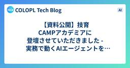
【資料公開】技育CAMPアカデミアに登壇させていただきました - 実務で動くAIエージェントをライブコーディングで実践  COLOPL Tech Blog
COLOPL Tech Blog
こんにちは、AIイネーブルメントグループの山田（@yamadashy）です。 先日、学生向けの勉強会イベント「技育CAMPアカデミア」に登壇させていただきました。 talent.supporterz.jp 技育CAMPアカデミアについて 技育CAMPアカデミアは、サポーターズが主催する学生エンジニア向けの勉強会イベントです。現役エンジニアによるセッションや、学生との質疑応答を通じて、実務の知識や技術に触れる機会を提供しています。 今回のセッションタイトルは「実務で動くAIエージェントを作ろう！ MCP×Mastraをライブコーディングで実践」。AIエージェントとMCPの仕組みを、実際にコードを…
14時間前

Dolbyが動画コーデックを巡ってSnapchatを提訴、AV1の「オープンでロイヤリティフリー」が疑問視されている 5 GIGAZINE
DolbyはSnapchatの開発・運営を手がけるSnapに対し、Snapchatの動画変換やエンコード、デコードに関わる処理が自社特許を侵害しているとして、2026年3月23日に提訴しました。この訴訟ではAV1にDolbyの特許技術が含まれているかどうかが争点となっており、AV1の「ロイヤリティフリー性」が改めて問われています。続きを読む...
14時間前

「ブルーブラッド」出演俳優、42歳で死去 シネマトゥデイ
アメリカのコメディアンで、「ブルーブラッド ～NYPD家族の絆～」などドラマへの出演でも知られた俳優のアレックス・ズオンさんが現地時間28日、死去した。TMZ.comなどが報じた。
14時間前
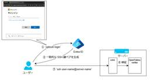
サーバーもネットワーク機器も Entra ID でログインする — opkssh と RADIUS で認証を一元化した話 24 NTT docomo Business Engineers' Blog
みなさんこんにちは、イノベーションセンターの福田・村田です。 我々は、クラウドとオンプレミスそれぞれの検証環境を所有しており、オンプレミス製品やそれらをクラウドと組み合わせたハイブリッドクラウドの検証をおこなっています。 チームでの活動を続ける中で検証環境が拡大し、セキュリティ強化やコンプライアンス対応、DevOps 環境の整備がますます重要になってきました。 その一環でサーバーやネットワーク機器へのログイン認証を Entra ID に一元化する取り組みを行いました。 本記事では、その背景や技術選定の判断、運用して得られた知見を共有します。 具体的には以下のような内容を扱います。 SSH 公開…
15時間前
「Windows 11 24H2 Home/Pro」のサービス終了まであと半年、「25H2」が全面展開へ／「Windows 11 25H2」の既知の問題はすべて解消済み 2窓の杜
「Windows 11 バージョン 24H2」のHome/Proエディションは米国時間2026年10月13日、つまりあと半年でサポート終了を迎える。そこで、米Microsoftは3月27日（現地時間）、「Windows 11 バージョン 25H2」の展開状況をアップデートした。今後はIT部門によって管理されていない「バージョン 24H2 Home/Pro」デバイスのすべてが機械学習（ML）を用いた“インテリジェントな”ロールアウトの対象となる。
15時間前

KIndle本 春の特大セール第2弾が開催！ Web制作、UIデザイン、イラスト・創作に役立つ資料や辞典の良書がお買い得です  コリス
コリス
※本ページは、アフィリエイト広告を利用しています。 KIndle本 春の特大セール第2弾が開催です！ Webや紙のデザイン、HTML/CSSなどWeb制作の解説書、同人誌・絵師さん向けのイラストの良書がたくさんセール対象 […]
15時間前

【GIGAZINE限定10％オフ】8万円台で買えるコスパ良好ミニPC「GEEKOM A5 Pro 2026エディション」の性能を徹底検証してみたよレビュー、Ryzen 5 7530U搭載で動画編集も可能
3 GIGAZINE
「GEEKOM A5 Pro 2026エディション」は1TBの大容量SSDや16GBのメモリを搭載しつつ価格を8万円台に抑えたコストパフォーマンス良好なミニPCで、自分でSSDやメモリを増設可能で余計なアプリもインストールされていないため初心者から上級者まで幅広い読者にオススメできます。そんなGEEKOM A5 Pro 2026エディションがGIGAZINE編集部に届いたので、実際に分解したりベンチマークテストを実行したりして性能を確かめてみました。期間限定のGIGAZINE読者専用10％割引きコードもあるので最後まで読んでください。続きを読む...
16時間前
Vertex AI Agent Engineを徹底解説  G-gen Tech Blog
G-gen Tech Blog
G-gen の佐々木です。当記事では、Google Cloud が提供する、フルマネージドの AI エージェントプラットフォームである Vertex AI Agent Engine について解説します。 はじめに Vertex AI Agent Builder とは Vertex AI Agent Engine とは 他のエージェント実行基盤との比較 Agent Engine の基本 エージェントの開発 エージェントの実行環境 実行環境の基本事項 コールドスタート エージェントの使用 エージェントに対する権限付与 Agent Engine のサブリソース セッション Memory Bank C…
16時間前
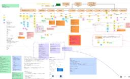
生成AI×vibecodingで業務改善アプリを“最速”開発 ── ヒアリングからMVPリリースまでの実践例  ENGINEERING BLOG ドコモ開発者ブログ
ENGINEERING BLOG ドコモ開発者ブログ
はじめに こんにちは。データプラットフォーム部（DP部）の石井です。 社内データ活用プラットフォーム「Pochi」のアプリ開発に携わっています。 現場の業務改善の鍵は、利用者のリアルな声を丁寧に拾い上げ、速やかに形にしていくことです。 ただ、リモートワークが当たり前となったいま、複数拠点・オンライン環境で“現場感”を保つのはこれまで以上に難しくなっています。 そんな状況下でも、「業務改善に本当に役立つアプリ」をいかに最短で届けるか？──今回は、チームの多拠点化・リモート時代に合わせたヒアリングからプロトタイピングまでの実践例をご紹介します。 社内データ活用プラットフォームPochi※1とは 私…
16時間前
インテルのCPU各種が最大20％OFF！Amazonでタイムセール実施中【本日みつけたお買い得情報】
窓の杜
Amazon.co.jpのインテル（Intel）ストアでは現在、同社のCPU各種がタイムセール価格で販売されています。
16時間前

「風、薫る」見上愛、役づくりで書道＆長刀の稽古 朝ドラ主人公「楽しみな気持ちと緊張でいっぱい」 シネマトゥデイ
30日に初回放送を迎えた連続テレビ小説「風、薫る」（NHK総合・月～土、午前8時～ほか ※土曜は1週間の振り返り）で、主人公・一ノ瀬りんを演じる見上愛が、朝ドラ主演を務める心境、キャラクターの演じ方について語った。
16時間前

「風、薫る」上坂樹里、悔しかった最終オーディション「役とリンクしていた」演出家の言葉に感謝 シネマトゥデイ
30日に初回放送を迎えた連続テレビ小説「風、薫る」（NHK総合・月～土、午前8時～ほか ※土曜は1週間の振り返り）で、もうひとりの主人公・大家直美を演じる上坂樹里が、朝ドラオーディション当時の心境を明かした。
16時間前

＜風、薫る 第2回あらすじ＞ りん（見上愛）が秘密を見つける シネマトゥデイ
俳優の見上愛と上坂樹里がダブル主演を務める連続テレビ小説「風、薫る」（NHK総合・月～土、午前8時～ほか）。31日に放送される第1週「翼と刀」第2回のあらすじを紹介する。
16時間前

複数リポジトリをまたぐ横断設計をAIで自律化するまで  CyberAgent Developers Blog | サイバーエージェント デベロッパーズブログ
CyberAgent Developers Blog | サイバーエージェント デベロッパーズブログ
はじめに こんにちは。AmebaLIFE事業本部エンジニアのsatominです。 この記事では、ビジ ...
17時間前

Google Cloud Workflowsを導入してABEMAの課金システムをリファクタリングした話 1 CyberAgent Developers Blog | サイバーエージェント デベロッパーズブログ
ABEMA バックエンドエンジニアの大真です。 ABEMAのサブスクリプションシステムをリファクタリ ...
17時間前

無料でiPhone/iPad・AndroidスマホでいろいろなローカルAIを動かしチャット＆ローカルAIベンチマークができるオープンソースアプリ「PocketPal AI」、サブスク不要＆オフラインでどこでも利用可能 8 GIGAZINE
スマートフォン上で直接動作する小型言語モデルを搭載したAIアシスタントが「PocketPal AI」です。PocketPal AIはiOSとAndroidの両方に対応しており、インターネット接続なしで様々なSLMと対話できます。すべての処理はデバイス上で完結するため、プライバシーは完全に保護されます。会話、プロンプト、データはスマートフォンから外部に送信されることも、外部サーバーに保存されることもありません。続きを読む...
17時間前

「職員が激減」に備えよ──2040年問題に向けて「自治体」に残された生存戦略 3ITmedia AI＋ 最新記事一覧
「2040年問題」を前に、自治体は人口減少や高齢化による深刻な人手不足に直面している。限られた職員で行政サービスを維持するにはどうすべきか――CIO補佐官として自治体DXに携わってきた筆者が、AI技術の進化を踏まえながら、行政サービスの未来像をマネジメントの視点で考える。
17時間前

地銀の属人的業務をAIに任せられるか 中国銀行と日立が描く自律化ロードマップ 2
ITmedia AI＋ 最新記事一覧
銀行の融資業務は属人化や事務負荷が根深い。この難題に対し、中国銀行と日立製作所がAIエージェントによる抜本的な変革に乗り出した。専門的な判断をどこまで自律化できるのか。“融資DX”の最前線に迫る。
17時間前
Agent Deck を使った AI エージェント管理 1 弁護士ドットコム株式会社 Creators’ blog
弁護士ドットコム株式会社 Creators’ blog
はじめに こんにちは。リーガルブレイン開発部ライブラリ開発チームの大川です。 Claude Code や Codex などの AI エージェントを使ってコーディングしていると、複数のエージェントを並行して動かしたくなることがあります。 しかし、油断していると AI エージェントを動かしているターミナルのウィンドウは再現なく増え続けます。 次第にどこで何のエージェントが動いているか把握しきれなくなり、管理が困難になるという状態にしばしば頭を悩ませていました。 そんな中で Agent Deck を使い始めてから AI エージェントの管理が楽になったので、使い方をまとめておきます。 はじめに 課題感…
17時間前

Bluesky、AIとの対話でカスタムフィードを作る新アプリ「Attie」 招待制で提供開始
19ITmedia AI＋ 最新記事一覧
Blueskyは、自然言語でカスタムフィードを作成できるAIアプリ「Attie」を発表した。「AT Protocol」を活用し、プログラミング知識なしでAIエージェントと対話しながら独自のタイムラインを構築できる。CIOのグレーバー氏は、AIをプラットフォームではなく個人の主導権を取り戻すための道具と位置づけている。
17時間前


同じ食事メニューが「ダイエット効果を高める」可能性 1 ナゾロジー
ダイエットに挑戦すると、多くの人が「栄養バランスよく、できるだけ多様な食事を取り入れるべき」と考えがちです。 しかし反対に、もし「毎日ほぼ同じメニューを食べること」が、むしろ減量効果を後押しするとしたらどうでしょうか。 米ドレクセル大学（Drexel University）の研究チームはこのほど、食事の「ルーティン化」が減量の成功に関係する可能性を明らかにしました。 研究の詳細は2026年の学術誌『Health Psychology』に掲載されています。
18時間前

キーワードを入力するだけで動画から該当箇所を切り抜くセマンティック検索「SentrySearch」 20 GIGAZINE
キーワードにマッチする動画を検索するのは容易ですが、動画の中からキーワードにマッチするワンシーンを切り出すのは非常に困難です。この処理をAIで行うプロセスが公開されています。続きを読む...
18時間前

フジクラが米ビッグテックに指名買いされる理由 生成AIが伸びると、なぜ「光配線」が儲かるのか 1ITmedia AI＋ 最新記事一覧
生成AIの普及が加速する中、その恩恵を受けているのは半導体やソフトウェア企業だけではない。米ビッグテックから「指名買い」される光ファイバー大手フジクラの岡田直樹社長に、AIの裏側で起きている構造変化を聞いた。
18時間前

家電・EVの次は「通信」で勝つ 世界インフラの主戦場で描く「日本企業の逆転劇」 2ITmedia AI＋ 最新記事一覧
世界最大のモバイル技術見本市「MWC 2026」が開催された。中国Huaweiが最大面積を誇る中、NTTの島田社長や楽天の三木谷会長兼社長が基調講演に登壇。IOWNの第2フェーズなど、日本発の次世代インフラ戦略が注目を集めた。家電やEVで苦戦が続く日本企業にとって、通信は残された数少ない戦略的強みだ。世界市場の奪還を狙う日本勢の現在地を、MM総研の関口和一理事長が現地からレポートする
18時間前
初めての SLI/SLO 設計  ユニファ開発者ブログ
ユニファ開発者ブログ
こんにちは、SRE の中村です。 ユニファでは SLI/SLO が設計されておらず、Slack の監視アラート通知チャンネルに通知が来ていなければ健全、アラートが来たらどこか異常の可能性あり、というように、健全性の定量的指標がありませんでした。 どんどんプロダクト数が増え、機能も増え、より複雑性が増す中でこのままの状態を続けるのは SRE として黙っていられない。 という思いが少しばかりと、あとは単純に SLI/SLO を運用してみたいという好奇心から PJ を発足しました。 私自身、SLI/SLO の運用経験は全くありませんでしたので、Google SRE や他社様の事例を参考にさせていただ…
18時間前
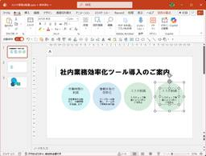
【パワポ効率化】新人が最初に覚えておくべき無駄のないレイアウト操作テク【残業を減らす！Officeテクニック】 2窓の杜
春から環境が変わって、パソコンを使った作業が増える人も多いですよね。「苦手」で済ましてきたことも、仕事では避けられません。特に成果が多くの人の目に触れるPowerPointのスライドは、見栄え良く整えたいところです。
18時間前
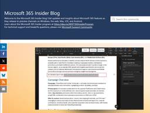
「Word」「Excel」でアクセシビリティの問題があるリンクを警告可能に／読み上げ機能では「説明付きのリンク」に置き換えられる 1窓の杜
米Googleは3月20日、Windows版「Word」と「Excel」において、誰でも識別できるとは限らないハイパーリンクの警告表示機能を追加した。視覚障害などがある読者にとって不適切なリンクを自動で見付け、修正できるようになる。
18時間前

動かず健康に！「空気イス」はランニングよりも高血圧の改善に役立つ 1 ナゾロジー
高血圧に対処する方法として、定期的に走ることが勧められたりします。 しかしそこまでの運動習慣を持つのはなかなか難しいものです。 イギリスのカンタベリー・クライスト・チャーチ大学（CCCU）を中心とする研究チームが、複数の運動法を比較した大規模分析を行い、「動かない運動」であるアイソメトリック・エクササイズが、血圧を下げるうえで最も有力な方法である可能性を示しています。 この研究は2023年10月6日付の医学誌『British Journal of Sports Medicine』に掲載されました。
18時間前

なぜ制御室の多くが「シーフォーム・グリーン」に塗られていたのか？ 245 GIGAZINE
昔の工場や原子炉施設などの制御室を見ると、壁や機器の一部がそろって淡い青緑色(シーフォーム・グリーン)に塗られていることがあります。デザイナーのベス・マシューズ氏は、こうした施設でよく見かける「シーフォーム・グリーン」の由来を調べました。続きを読む...
19時間前

「Samsung Galaxy S26／S26+／S26 Ultra」ベンチマーク結果＆バッテリー持続時間をまとめてみた GIGAZINE
Samsungが2026年3月に発売した「Galaxy S26」「Galaxy S26+」「Galaxy S26 Ultra」はどういう性能を持つ端末なのか、定番のベンチマークアプリなどを用いて測ってみました。続きを読む...
20時間前

町田啓太、“大先輩”藤本美貴の言葉が助けに フリースクール舞台のドラマで子どもたちとの撮影に奮闘 シネマトゥデイ
俳優の町田啓太が25日に都内で行われた主演ドラマ「タツキ先生は甘すぎる！」（日本テレビ系で4月11日スタート、毎週土曜21時～）の制作発表会見に共演者の松本穂香、藤本美貴、比嘉愛未、江口洋介と出席。フリースクールを舞台にした本作での子どもたちとの撮影の舞台裏を振り返った。
20時間前

「ポスト藤田晋」ソニー追う／SBG、OpenAI出資の内幕／イランが狙う湾岸覇権（2026年3月30日版） (日経ビジネスAUDIOモーニング) 日経ビジネス電子版 最新記事
［新連載］サイバーエージェント、「ポスト藤田」が育てるアニメ ソニー追う／SBG、オープンAI5兆円出資の内幕 「マジですか」とCFO室長／「イランは湾岸地域の覇権を狙っている」 米国の要求が示す現在の戦況、他
20時間前
「イランは湾岸地域の覇権を狙っている」 米国の要求が示す現在の戦況 (トランプ2.0の世界) 日経ビジネス電子版 最新記事
米国とイスラエルがイランに攻撃を開始して、4週間が過ぎた。トランプ米大統領とイランの要求は大きく離れているとみられ、有識者は「交渉になっていない」と語る。イランは傷つきながらも現在の戦況を優位と捉え、「ペルシャ湾の覇権」を狙う。
20時間前
アマゾン創業者ベゾスが実践 人生で後悔しないための「究極の思考法」 (Books) 1 日経ビジネス電子版 最新記事
イーロン・マスク、スティーブ・ジョブズ、ジェフ・ベゾス……。天才イノベーターに共通する、第一原理思考、アナロジー思考、パラノイア思考、物語思考、反逆思考、情熱思考、SF思考などの思考法を解剖した書籍『天才思考 世界を変えるイノベーションを生む10の思考法』から一部を抜粋・再編集してお届けする連載の第5回では、アマゾン創業者ジェフ・ベゾスが実践する人生の後悔を最小化するための「究極の思考法」を取り上げます。
20時間前
ディスコ、働きがいのある会社1位 関家社長「不納得をなくすことが大事」 (Views) 日経ビジネス電子版 最新記事
2026年版「働きがいのある会社」ランキングの大規模部門で1位に。社内のあらゆる活動を取引と捉え、社内通貨Will（ウィル）で、やりとりする独自経営が特徴だ。社員に個人事業主のような意識を持たせる他にない仕組みがモチベーション向上にもつながっている。
20時間前
SBG、オープンAI 5兆円出資の内幕 「マジですか」とCFO室長 (ソフトバンクG チーム後藤) 日経ビジネス電子版 最新記事
「1兆、2兆」と豆腐のように大型投資を決めるソフトバンクグループ。それに伴い有利子負債は3カ月で4兆円増えた。なぜ巨額の借り入れができるのか。その内幕を追った。
20時間前
［新連載］サイバーエージェント、「ポスト藤田」が育てるアニメ ソニー追う (サイバーエージェント、後発組の挑戦) 1 日経ビジネス電子版 最新記事
サイバーエージェントがアニメ＆IP事業で本気を出している。共同幹事を務めた青春ホラーアニメ「光が死んだ夏」がヒット。創業者・藤田晋氏から経営のバトンを受け取った2代目の山内隆裕社長がけん引する中、先行するソニーグループや東宝に追い付けるのか。
20時間前
今井むつみ氏「苦手な英語の勉強時間を増やす前に考えるべきこと」 (Books) 日経ビジネス電子版 最新記事
日本人は英語が苦手。しかし「苦手だから勉強量を増やすという発想では、根本的な解決策にならない」と、認知科学者は提言する。
20時間前

［クイズ］神山まるごと高専が開催する「チャレンジファンド」とは？ (日経ビジネス教養クイズ) 日経ビジネス電子版 最新記事
神山まるごと高専が設けている「チャレンジファンド」とは、どのような制度でしょう？
20時間前
発達障害の「幼少期に見られる兆候」とは？ 点ではなく経過で見る (もっと教えて！「発達障害のリアル」) 日経ビジネス電子版 最新記事
発達障害と診断される子どもには、幼少期から兆候が見られる──大規模調査に基づき、医師が語る。着目すべきマイルストーンは5つ。
20時間前

シニア社員、「何ができるか」を元に役割をつくれば定年後の選択肢は無限に (真のリーダーになるための課長塾) 日経ビジネス電子版 最新記事
キャリアプラトーにある社員は行き詰まりを感じ、一種の“視野狭窄”に陥っています。皆さんにはそこで、視野を、ぐっと広げてあげてほしい。世界は広いのです。人生は定年以降も続きますし、今の会社以外で働くという選択肢もあるはずですよね。
20時間前
3/29 (日)

あの「一太郎」の文章校正エンジンを使ってChrome上のテキスト入力を正しく校正できる「JUSTチェッカー」を使ってみた、XやGmailなど色んなサイトで使用可能 1 GIGAZINE
ジャストシステムの老舗ワードソフト「一太郎」には日本語の文章を正しく書くための高性能な校正エンジンが備わっています。そんな一太郎の校正エンジンをChromeとEdgeで使えるようにするブラウザ拡張機能が「JUSTチェッカー」で、Xの投稿画面やGmailのメール作成画面や各種ウェブサイトの問い合わせフォームなど幅広い用途で校正機能を使うことができます。便利そうだったので実際に使ってみました。続きを読む...
1日前

【ネタバレ】「リブート」最終話、真の味方が判明し反響「最高すぎる」「かっこいい!!」 シネマトゥデイ
鈴木亮平主演の日曜劇場「リブート」（TBS系、毎週日曜よる9時～）の最終回となる第10話「再起動」が29日に放送、警察内部の味方と真のスパイが判明し、X（旧Twitter）では視聴者から「最高すぎる」などの声があがった。（ネタバレあり。以下、第10話までの内容に触れています）
1日前
泥とわらで作った器でブドウを半年近く常温保存できる伝統的な保存方法「カンギナ」とは？ 4 GIGAZINE
傷みやすいブドウを泥とわらで作った器に入れて保存するアフガニスタンの伝統的な保存方法が「カンギナ」です。厚い皮を持つ品種の場合、涼しく乾いた場所で最大約6カ月保存できるとされています。続きを読む...
1日前

「リブート」最終話、北村匠海がサプライズ出演 重要人物役に「光栄でした」【ネタバレあり】 シネマトゥデイ
鈴木亮平主演の日曜劇場「リブート」（TBS系、毎週日曜よる9時～）の最終話「再起動」が29日に放送、北村匠海が重要な役どころでサプライズ出演を果たし、X（旧Twitter）では視聴者から驚きの声があがった。（ネタバレあり。以下、第10話までの内容に触れています）
1日前

仕事への意欲が高い人ほど職務とは無関係な追加業務を振られやすい 2 ナゾロジー
「仕事が楽しく、今の業務にやりがいを感じている」――そんな前向きな姿勢で働く人ほど、なぜか本来の職務とは直接関係のない事務作業や委員会活動といった、付随的な業務を割り振られてしまう、職場でそんな問題を目にしたことはないでしょうか。 日本でも、仕事のやりがいを理由に不当な負担を強いる「やりがい搾取」という言葉が注目されてきましたが、多くの人が職場で感じる「なぜか頑張る人ほど損をする」構図について、新たな研究は、管理者が陥りやすい特定の心理的偏りが関係している可能性を報告しています。 この実態を調査したのは、アメリカのノースイースタン大学（Northeastern University）のサンガ・ベ（Sangah Bae）助教授と、コーネル大学（Cornell University）のケイトリン・ウーリー（Kaitlin Woolley）教授らの研究チームです。 サンガ助教授自身、かつて若手…
1日前

「Samsung Galaxy S26／S26+／S26 Ultra」外観レビュー、厚みがさらに減って7mm台へ GIGAZINE
Samsungが2026年2月に発表した第3世代AIフォン「Samsung Galaxy S26」「Samsung Galaxy S26+」「Samsung Galaxy S26 Ultra」が3月12日(木)に発売されました。Samsungが最先端技術を結集し、1日中快適に利用可能というGalaxy S26シリーズを借りたので、いろいろと触ってみることにしました。続きを読む...
1日前

「豊臣兄弟！」茶々巡る不穏なナレに悲鳴 シネマトゥデイ
仲野太賀主演による大河ドラマ「豊臣兄弟！」（NHK総合・毎週日曜午後8:00ほかで放送中）の29日放送・第12回で、お市（宮崎あおい※崎＝たつさき）と浅井長政（中島歩）の娘である茶々が初登場。藤吉郎（秀吉／池松壮亮）との対面シーンでの不穏なナレーションが注目を浴びた（※一部ネタバレあり）。
1日前

人類初の「宇宙遊泳」に成功した男、裏で起きていた「絶体絶命の危機」とは？ 1 ナゾロジー
1965年3月18日、ソ連の宇宙飛行士アレクセイ・レオーノフは、人類で初めて宇宙船の外へ出て「宇宙遊泳」を行った人物として歴史に名を刻みました。 現在、宇宙遊泳は国際宇宙ステーションの運用や修理でも欠かせない作業ですが、その最初の一歩は、華々しい偉業であると同時に、ほとんど事故寸前の綱渡りでもありました。 宇宙船の外へ出て地球を見下ろす姿は、いかにも未来的で優雅に見えます。 しかし実際のレオーノフが味わっていたのは、静かな感動だけではありませんでした。 宇宙服が膨張して宇宙船に戻れなくなり、酸素を自分で抜いて減圧症の危険に身をさらし、ようやく帰還した後も、宇宙船は次々とトラブルに襲われたのです。 今回は、人類初の「宇宙散歩」の裏側で、レオーノフがどれほど深刻な危機をくぐり抜けていたのかを見ていきます。
1日前

「豊臣兄弟！」初登場の吉岡里帆、セリフなしも強烈な爪痕 シネマトゥデイ
仲野太賀主演による大河ドラマ「豊臣兄弟！」（NHK総合・毎週日曜午後8:00ほかで放送中）の29日放送・第12回では、大河ドラマ初出演となる吉岡里帆演じる慶（ちか）が初登場。慶は主人公・秀長（小一郎／仲野）の正妻となりのちに慈雲院（じうんいん）と呼ばれる女性で、初登場回は一言も言葉を発さないままだったが強烈なインパクトで視聴者をくぎづけにした（※一部ネタバレあり）。
1日前

中島歩、「豊臣兄弟！」信長密談乱入の裏側振り返る 「セリフ以外で心情表現」 シネマトゥデイ
仲野太賀主演による大河ドラマ「豊臣兄弟！」（NHK総合・毎週日曜午後8:00ほかで放送中）で浅井長政を演じる中島歩が、29日放送・第12回の織田信長（小栗旬）、長政の父・久政（榎木孝明）らとの緊迫のシーンを振り返った。
1日前

無料で広告なしのAndroid画像ビューア「Aves」レビュー、マルチページTIFF・SVG・AVI・モーションフォト・パノラマ画像・360度動画にも対応 1 GIGAZINE
Androidに標準でインストールされている画像ビューアは、スマホのカメラアプリで撮影した画像を閲覧するだけなら十分な性能があるものの、ダウンロードした画像を見ようとすると対応外フォーマットで表示できないという場面があります。画像ギャラリービューアの「Aves」は無料で使用でき多くのフォーマットやメディアタイプに対応しているとのことで、使用感を実際に確認してみました。続きを読む...
1日前

『メイドインアビス 目覚める神秘』公開日決定！キービジュアル公開 シネマトゥデイ
シリーズ累計発行部数2200万部を突破した、つくしあきひとのコミックをアニメ化した「メイドインアビス」の劇場シリーズ第1部となる『メイドインアビス 目覚める神秘』が10月23日に劇場公開されることが決定し、キービジュアルが公開された。
1日前

【完全ネタバレ】『プロジェクト・ヘイル・メアリー』徹底解説 小ネタ＆裏話、原作にないオリジナル要素まとめ 57 シネマトゥデイ
宇宙の彼方で力を合わせる地球人グレース（ライアン・ゴズリング）と、エイリアンのロッキーの友情を描く映画『プロジェクト・ヘイル・メアリー』が大ヒット公開中。ここでは、映画に登場するSF映画ファンが嬉しいイースターエッグや裏話、原作には無い映画オリジナルの要素を紹介する。（文・平沢薫）
2日前

7ORDER安井謙太郎、ギャバン・ライヤに蒸着！「超ギャバン」風波駆無役で出演「身が引き締まりました」 シネマトゥデイ
特撮ドラマ「超宇宙刑事ギャバン インフィニティ」（テレビ朝日系・毎週日曜午前9時30分～）の第10話（4月19日放送）より、新たなギャバン「ギャバン・ライヤ」が登場することが明らかになった。同ヒーローに蒸着する風波駆無（かざなみ・くない）役には、5人組アーティスト・7ORDERの安井謙太郎が抜てきされた。
2日前

「超ギャバン」ギャバン・ライヤのビジュアル公開！「世界忍者戦ジライヤ」がモチーフ 1 シネマトゥデイ
特撮ドラマ「超宇宙刑事ギャバン インフィニティ」（テレビ朝日系・毎週日曜午前9時30分～）の第10話（4月19日放送）より登場する、新たなギャバン「ギャバン・ライヤ」のビジュアルが公開された。
2日前

塚本晋也監督最新作『ネルソンさん、あなたは人を殺しましたか？』9月公開決定！“戦争加害者の傷”に切り込む衝撃作 2 シネマトゥデイ
『野火』や『ほかげ』で世界の映画ファンを唸らせてきた塚本晋也監督（「塚」は「豕」に点ありの旧字体が正式表記）の最新作『ネルソンさん、あなたは人を殺しましたか？』が9月より全国で公開されることが決定した。3月29日の「ベトナム戦争退役軍人の日」に合わせて情報が公開された。
2日前

「ゴジュウジャーFLT」謎の新キャラ・めーちゃん役は伊藤美来 大阪SP公演にユニバース戦士参戦決定 シネマトゥデイ
現在開催中のイベント「ナンバーワン戦隊ゴジュウジャー ファイナルライブツアー2026」第1部のヒーローショーに登場する新キャラクター「めーちゃん」の声を、声優の伊藤美来が担当していることが明らかになった。 あわせて、大阪SP公演の第2部に参加する豪華ゲストも発表された。
2日前

仮面ライダーゼッツ＆超ギャバン『Wヒーロー夏映画』7.24公開決定！超特報＆ビジュアル公開 シネマトゥデイ
テレビ朝日系にて放送中の特撮ドラマ「仮面ライダーゼッツ」「超宇宙刑事ギャバン インフィニティ」の2本立て映画『仮面ライダーゼッツ＆超宇宙刑事ギャバン インフィニティ Wヒーロー夏映画 2026』が、7月24日（金）より全国公開されることが決定し、超ティザービジュアルと超特報映像が公開された。
2日前

いよいよ30日スタート！新朝ドラ「風、薫る」第1回あらすじ：りん（見上愛）に届いた驚きの知らせとは？ シネマトゥデイ
俳優の見上愛と上坂樹里がダブル主演を務める連続テレビ小説「風、薫る」（NHK総合・月～土、午前8時～ほか）が、30日にスタート。第1週「翼と刀」第1回のあらすじを紹介する。
2日前

【ネタバレあり】『ゴジュウジャーVSブンブンジャー』歴代レッドで粋な演出 中澤祥次郎監督が明かす製作秘話 シネマトゥデイ
スーパー戦隊シリーズ50周年と「VSシリーズ」30周年を記念したVシネクスト『ナンバーワン戦隊ゴジュウジャーVSブンブンジャー』を手がけた中澤祥次郎監督がインタビューに応じ、歴代レッドも登場する集大成作品の裏側、リピーターに向けた2回目以降の楽しみ方について語った。（以下、本編のネタバレを含みます）（取材・文：編集部・倉本拓弥）
2日前

目黒蓮主演で実写化！映画『SAKAMOTO DAYS』キャラクター紹介【まとめ】 シネマトゥデイ
目黒蓮（Snow Man）主演で「週刊少年ジャンプ」連載中の鈴木祐斗による人気漫画を実写化する映画『SAKAMOTO DAYS』が4月29日より全国公開。豪華キャストが演じる主要キャラクターとあらすじを紹介する。
2日前

「岸辺露伴」新作ドラマ“何かがおかしい”漫画家・西恩ミカの仕事場を公開 1 シネマトゥデイ
実写ドラマ「岸辺露伴は動かない」シリーズの新作で、飯豊まりえ演じる編集者・泉京香を主人公にした「泉京香は黙らない」（NHK総合で5月4日、夜9:30～10:30）の場面写真11点が公開された。26日に行われた同作の取材会では飯豊が「今まで見せたことのない表情がたくさん出てきます」と語っていたが、その発言を思わせる多彩な表情が切り取られている。
2日前
3/28 (土)

Notion、日本と韓国でデータ保管可能に 26年5月から提供開始 2ITmedia AI＋ 最新記事一覧
Notion Labsは、新たに日本と韓国をデータ保管地域に指定すると発表した。AWSを活用し国内保存を選択可能にすることで、企業の内部統制や法規制への対応を支援する。
3日前

ドラクエで「対話型AIバディ」誕生 ゲーム業界の機能不全をどう突破するか 2ITmedia AI＋ 最新記事一覧
市場拡大の裏で収益悪化に喘ぐゲーム業界。この構造的課題を打破すべく、スクウェア・エニックスとGoogle Cloudが手を組んだ。両社が見すえる、人気作『ドラクエ』を舞台に、生成AIが「敵」から「友」へと変容する未来とは。
3日前
3/27 (金)
Claude Codeで実践する複利的エンジニアリング — 「コンパウンド」工程とエージェンティックコーディング時代の開発フロー Happy Elementsのフィード
2026 Agentic Coding Trends Reportでは、プロンプトエンジニアリングからコンテキストエンジニアリングへの移行というパラダイムシフトが示されています。コンテキストエンジニアリングの具体的な手法として、Every.toで紹介されているCompound Engineering（複利的エンジニアリング）を考えた場合、Claude Codeの各種機能の捉え方も変わってくるように感じました。複利的エンジニアリングと、そのためのコンパウンド工程及びそれらのClaude Codeでの実践方法についてまとめました。 複利的エンジニアリングについてEvery.toの...
3日前
ものづくりの祭典「Maker Faire Tokyo 2026」が出展者・協賛企業の募集を開始／有明GYM-EXで9月5日から6日まで開催 1窓の杜
（株）インプレスは3月26日、9月5日（土）から6日（日）までの2日間、有明GYM-EX（東京都江東区有明一丁目10番1号）で開催される「Maker Faire Tokyo 2026」の出展者・協賛企業の募集を開始した。現在、専用フォームにて出展申込を受け付けている。
3日前

Rails: 本質的に非決定論的なAIエージェントを決定論的なガードレールに変える試み（翻訳） 20 TechRacho
概要 元サイトの許諾を得て翻訳・公開いたします。 英語記事: Getting nondeterministic agent into deterministic guardrails | Arkency Blog 原文公開日: 2026年02月20日 原著者: Łukasz Reszke 日本語タイトルは内容に即したものにしました。 Rails: 本質的に非決定論的なAIエージェントを決定論的なガードレールに変える試み（翻訳） AIエージェントは、指示に100%従うものではありません。本記事では、私がそのつらみを緩和したときの方法を紹介します。 背景: 私が手がけているのは12年もののRailsアプリのレガシーな […]The post Rails: 本質的に非決定論的なAIエージェントを決定論的なガードレールに変える試み（翻訳） first appeared on TechRacho.
3日前

“AI不使用”の作品に「AI生成」と誤表記――電子書籍配信「クロスフォリオ出版」が謝罪【追記あり】 26ITmedia AI＋ 最新記事一覧
BookLiveは、クリエイター向け電子書籍配信サービス「クロスフォリオ出版」で配信した一部の作品で、制作に生成AIを利用していないにもかかわらず、AIを使用している旨の誤表記があったと謝罪した。
3日前

GENIAC における ParallelCluster GPU クラスタの構築記録 Sansan Tech Blog
Sansan株式会社 研究開発部Architect GroupでMLOps/Platformエンジニアをしている伊藤です。 今回は、GENIACに採択され、AWS上にSlurmによるGPUクラスタを構築した経験から、事前に知っておきたかったポイントをまとめます。構築中に遭遇した課題と、そのときの判断を具体的に書いているので、これからGENIACへの応募を検討している事業者やGENIACに採択された事業者の方が「ここは先に設計しておこう」と見積もれる材料になれば幸いです。 目次 GENIAC とは 技術選定: なぜスケジューラを使い、なぜ Slurm を選んだか 構築タイムライン 全体アーキテク…
3日前

サイバー子会社・AI Shift、名前が似た企業との混同に注意喚起 「SHIFT」や「SHIFT AI」との誤認が発生か 4ITmedia AI＋ 最新記事一覧
サイバーエージェントの子会社でAI事業を手掛けるAI Shiftが、自社への問い合わせや評価において、似た名前の企業・サービスとの混同が見られるとして注意喚起した。生成AI関連のスクール事業を手掛けるSHIFT AI（東京都渋谷区）や、ITコンサルティング事業を手掛けるSHIFTとの誤認が起きているとみられる。
3日前
SmartHRの労務プロダクトに興味をお持ちの方へ SmartHR Tech Blog
この記事は、SmartHRの労務プロダクト領域にご興味をお持ちの方向けに、参考になりそうな情報をまとめたものです。 お気軽に カジュアル面談 のお申し込みをお待ちしております！ 募集中の職種 ウェブアプリケーションエンジニア（労務領域 バックエンド） シニアウェブアプリケーションエンジニア（労務領域 シニアバックエンド） シニアウェブアプリケーションエンジニア（勤怠管理領域 シニアバックエンド） ウェブアプリケーションエンジニア（労務領域 人事マスタ バックエンド） エンジニアリングマネージャー候補 ウェブアプリケーションエンジニア（労務領域 チーフ候補） プロダクトマネージャー（労務領域） …
3日前
無料の3DCG統合環境「Blender 5.1」ではシェーダーコンパイルが高速化【Blender ウォッチング】 2窓の杜
本連載では、無料の高機能3Dモデリングツール「Blender」の使い方や関連情報を幅広くお伝えします。
3日前

【予告】外形監視のIPv6対応に伴い、アラートが再度通知される可能性があります Mackerel ブログ #mackerelio
現在MackerelではIPv6への対応を進めており、先行リリースとして外形監視のIPv6対応を近日リリースします。「外形監視のアラートが発生し続けている」場合に、再度そのアラートについて通知される可能性があります。
3日前
Webサーバー「nginx」にセキュリティアップデート、6件の脆弱性を修正／「Mainline」バージョンには「Multipath TCP」対応などの新要素も 1窓の杜
クロスプラットフォーム対応・オープンソースのWebサーバーシステム「nginx」（エンジンエックス）が3月24日、v1.28.3（stable）、v1.29.7（mainline）へとアップデートされた。以下の脆弱性に対処したセキュリティアップデートとなっている。
3日前

Wikipedia、LLMによる記事生成を原則禁止に 48
ITmedia AI＋ 最新記事一覧
Wikimedia Foundationは、Wikipediaの記事作成や書き換えでのLLMの使用を原則禁止するガイドラインを公開した。自身の文章の校正案としての利用や、特定ルール下での他言語版からの翻訳は例外として認められる。生成AI特有の文体のみで判断せず、内容の正確性や編集履歴に基づき違反を特定する方針だ。
3日前

グローバルに展開し、ローカルに攻める（IIJ.news）  IIJ Engineers Blog
IIJ Engineers Blog
インターネット関連の最新動向や技術情報をお届けする広報誌「IIJ.news」。 Vol.193の特集は「グローバルに展開し、ローカルに攻める ― IIJグループの国際戦略」です 「IIJって、海外で...
3日前
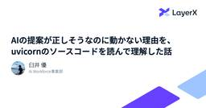
AIの提案が正しそうなのに動かない理由を、uvicornのソースコードを読んで理解した話 2 LayerX エンジニアブログ
LayerX エンジニアブログ
こんにちは。LayerX Ai Workforce事業部でSWEとしてインターンをしているYuです。 本記事では、AIの提案をそのまま実装してうまくいかなかった経験や、フレームワークのソースコードを読んで解決に至ったプロセス、そしてその過程で感じたことについてお話しします。 はじめに みなさんは、普段開発をするときに、Coding Agentを使っていますか？ Claude Codeがリリースされてから、Coding Agentの流れが加速したように感じており、最近では自分自身でコードを書くこともかなり減ってきています。自分はソフトウェア開発を始めて2年ほどなのですが、自分の成長スピードを遥か…
3日前
PFN、日本語特化のAI翻訳「PLaMo翻訳」にデスクトップアプリを追加、Windows/Mac対応／ショートカットキー一発で選択テキストを翻訳、ファイル翻訳や用語集などの機能も 23窓の杜
（株）Preferred Networks（PFN）は3月24日、AI翻訳サービス「PLaMo翻訳」のデスクトップアプリをリリースした。WindowsとMacに対応しており、無償の「Free」プランを含むすべてのプランで追加料金なしに提供される。
3日前
「Microsoft Edge」v146.0.3856.84が展開中、「Chromium」の脆弱性に対処／ 1窓の杜
米Microsoftは3月26日（現地時間）、デスクトップ向け「Microsoft Edge」v146.0.3856.84を安定（Stable）チャネルでリリースした。セキュリティ情報はまだ公開されていないが、ベースとなっている「Chromium」がv146.0.7680.166へアップデートされており、先日「Google Chrome」で実施された脆弱性修正が適用されていると思われる。
3日前
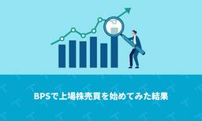
BPSで上場株売買を始めてみた結果 TechRacho
去年夏ごろに公開したこの記事の続きです。 BPSで上場株売買を始めてみました 前回記事以降の成果 年月 純損益 手数料 2025/04 ¥4,330,857 ¥551,163 2025/05 ¥86,808 ¥45,192 2025/06 ¥8,652,234 ¥848,660 2025/07 ¥250,923 ¥83,311 2025/08 ¥184,676 ¥3,324 2025/09 ¥498,253 ¥8,247 2025/10 ¥573,098 ¥171,470 2025/11 ¥238,959 ¥73,995 2025/12 ¥660,212 ¥168,280 2026/01 ¥352,687 ¥57 […]The post BPSで上場株売買を始めてみた結果 first appeared on TechRacho.
3日前
コーディングエージェントのサンドボックス技術を理解する 45 松尾研究所テックブログのフィード
株式会社松尾研究所の渡辺です。CodexやClaude Codeなどのコーディングエージェントは開発者のシェルとほぼ同じことができるようになっています。エージェントの中でnpm install を許可した際に、そのpostinstallスクリプトが ~/.ssh/id_rsa を読んで機密情報を外部に送信するといったことも理論上は起こりえます。このような事故を防止できるのが、サンドボックスです。本来のシステムから隔離された環境のことをサンドボックスと呼びます。本記事では、コーディングエージェントを走らせる際に、知っておくと役立つサンドボックス技術についてご紹介します。自分自身がCl...
4日前

現場の暗黙知を仕組みに変えるプロダクト開発の第一歩 —— カスタマーサクセス×開発チーム ワークショップレポート SmartHR Tech Blog
SmartHRでプロダクトエンジニアをしている @kazukun です。これまでタレントマネジメント領域のプロダクト開発に多く携わってきました。直近ではHRアナリティクス機能やマネジメント育成計画機能の開発を担当しました。 今年の1月からは新たに組成された社内ツールユニットへ異動しました。これまでの顧客向けプロダクト開発とは異なり、CS（カスタマーサクセス）やコンサルなど社内メンバーが利用するツール群を開発するチームです。ユーザーが社内メンバーに変わったことで、「誰の何を解くのか」を改めてゼロから定義する必要がありました。 本記事では、CSメンバーと半日かけて実施したワークショップの内容を紹介…
4日前
Amazonでアドビ製品がセール中！「Premiere Pro」「Photoshop CC」が45％OFF【本日みつけたお買い得情報】 1窓の杜
Amazon.co.jpでは現在、4月9日（木）までの期間限定でアドビ製PCソフトのセールが行われています。「Premiere Pro」「Photoshop CC」が45％OFFでタイムセールされているほか、「Creative Cloud Pro」「Illustrator」の初回購入者限定50％OFFキャンペーンも実施されています。
4日前
「QUNOG 34 Meeting in福岡」に現地参加してきました！ IIJ Engineers Blog
IIJ Engineers Blogをご覧の皆さま、こんにちは！IIJのfuji-nanaと言います。普段は九州で営業をしておりますが、現在社内公募型の兼務制度「セレクトジョブ」で、広報部にも所属中で...
4日前

実践CQRS+ES ── 小さな集約と大きな業務出力を両立する 52 ZOZO TECH BLOG
はじめに こんにちは。基幹システム本部・リプレイス推進部・リプレイス推進ブロックの岡本です。 私たちのチームでは、ZOZOの基幹システムリプレイスの一環として、会計領域のシステムを新規構築しています。アーキテクチャにはCQRS（Command Query Responsibility Segregation）+ES（Event Sourcing）を採用しました（以降、CQRS+ESと略記します）。 本記事では、CQRS+ESを実務へ適用する中で直面した「小さな集約を保ちながら、大量の集約をまたいだ業務出力をどう実現するか」という課題と、その解決で得られた知見を紹介します。 会計システムでは、決…
4日前
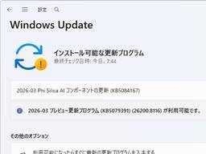
Windows 11の2026年3月プレビューパッチが公開 ～エクスプローラーやディスプレイ対応を改善、リフレッシュレート1,000Hz超にも対応／バージョン 26H1、25H2、24H2で利用可能 2窓の杜
米Microsoftは3月26日（現地時間）、2026年3月のWindows非セキュリティプレビューパッチをリリースした。現在、以下のOSバージョンで利用可能。
4日前
Google、最新鋭のリアルタイム音声AIモデル「Gemini 3.1 Flash Live」を発表／おしゃべり検索機能「Gemini Live」「Search Live」の新しい頭脳 25窓の杜
米Googleは3月26日（現地時間）、「Gemini 3.1 Flash Live」を発表した。同社のリアルタイム音声生成モデルとしては、これまでで最高の品質を誇るとされている。
4日前
入社4年目でプロジェクトリーダーに。ニーズ高まるセキュリティ領域での日立の若手活躍現場を深掘り  Qiita Zine
Qiita Zine
私たちが日々手にする便利なデバイスや、進化を続ける家電製品。それらがネットワークにつながることが「当たり前」になった今、その裏側で、目に見えない「サイバー攻撃」の脅威が静かに、確実に広がっています。 かつては付加価値の1 […]投稿 入社4年目でプロジェクトリーダーに。ニーズ高まるセキュリティ領域での日立の若手活躍現場を深掘り は Qiita Zine に最初に表示されました。
4日前

Vol. 15 新規プロダクトを最速でリリースするために、デザイナーが意識したこと Sansan Tech Blog
この記事は、Sansan Data Intelligence 開発Unit ブログリレーの第15弾です！！ こんにちは！ Sansan Data Intelligence（SDI）プロダクトデザイナーの来住（Kishi）です。2024年に新卒で入社し2年目が始まった時期から、SDIの開発に立ち上げメンバーとして参画しています。 この記事では、新規プロダクトを半年で体験設計、実装、リリースするためにデザイナーチームとして意識した3つのことを紹介します。 1. 立ち上げフェーズからデザインシステムを意識的に使う 1つ目は、画面設計時からデザインシステムを一貫して使い、実装でも活用してもらうことです…
4日前

Agentic能力を強化しロングコンテキストに対応したABEJA-Qwen3-14B-Agentic-256k-v0.1の公開 2 ABEJA Tech Blog
ABEJA Tech Blog
こんにちは。 ABEJAでデータサイエンティストをしている服部です。 弊社は、経済産業省とＮＥＤＯが実施する、国内の生成AIの開発力強化を目的としたプロジェクト「GENIAC（Generative AI Accelerator Challenge）」の1期、2期に続き、3期にも採択され、そこで大規模言語モデルの開発を行っています。 3期ではエージェントとして用いるための基盤モデルを開発しており、特にロングコンテキスト処理性能と Planning / Tool Use などの Agentic な能力の向上に重点を置いて開発を進めております。 そこで開発したモデルを公開しましたので、公開に伴うモデ…
4日前

入門書だけど、かなり実践的で詳しい！ 進化したFigmaの使い方がよく分かる解説書 -Figmaのきほん 改訂版 21 コリス
※本ページは、アフィリエイト広告を利用しています。 UIデザインにおいて、もはやFigmaは必要不可欠なツールになっています。 Figmaをこれから初めて使用する人、なんとなく使ってるけどきちんと使い方を学びたい人向けに […]
4日前

IoTは農業でも正解配布装置となり得るのか？（愛媛の柑橘DXの取り組み後編） IIJ Engineers Blog
愛媛県HAPPの勉強会へオブザーバー参加してきました。 柑橘やレモン、里芋の畑で半年間に渡りIIJのセンサーシステムを利用いただいた総括を伺う会です。 HAPP：愛媛県松山市北条地区の若き農業経営者た...
4日前

Artifact Registryのクリーンアップポリシーと保持ポリシーで特定イメージの削除を防止する G-gen Tech Blog
G-gen の佐々木です。当記事では、Artifact Registry で不要になったイメージを自動削除するクリーンアップポリシーについて、特定のイメージが削除されないように条件付きの保持ポリシーを組み合わせて使う方法を解説します。 クリーンアップポリシーとは 機能の概要 保持ポリシーを使用するケース 保持ポリシーで設定可能な条件 当記事のユースケース 設定方法 保持対象イメージへのタグの付与 ドライラン ポリシーの適用 クリーンアップポリシーとは 機能の概要 Artifact Registry のクリーンアップポリシーは、リポジトリ内のイメージを条件に基づいて自動的に削除する機能です。 開…
4日前
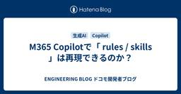
M365 Copilotで「 rules / skills 」は再現できるのか？ 1 ENGINEERING BLOG ドコモ開発者ブログ
M365 Copilotでもrules / skills に近い挙動を再現できるのかを検証しました！
4日前

利用者から開発者へ──“使いやすさ”が生まれる構造と、それを組織で仕組み化するまでの軌跡 ENGINEERING BLOG ドコモ開発者ブログ
はじめに こんにちは。データプラットフォーム部（DP部）の石井です。 マーケティング部門から異動し、社内データ活用プラットフォーム「Pochi」のアプリ開発に携わっています。 本記事では、「利用者から開発者へ歩みを変えたことで初めて見えた“使いやすさの構造」” その課題を、組織としてどう“仕組み化”し改善していったのか、という、利用者視点 × 開発者視点 × 組織改善 の3軸を一気通貫でお伝えします。 社内データ活用プラットフォームPochi※1とは 私たちDP部は社内のデータ民主化を目指し、StreamlitとGoogle Cloudで圧倒的に使いやすいデータ活用プラットフォームPochi※…
4日前
現役プロに教わるアプリ設計とFirebase・VS Codeの初期設定 ～コードを書く前の「地味な準備」が肝心？【プロと実践！ ゼロから始めるバイブコーディング】 2窓の杜
「非エンジニアでもアプリを作りたい！」という思いから、生成AIを活用して自作アプリの開発（バイブコーディング）に挑戦するが、「公開の壁」に立ち尽くしてしまう筆者。
4日前

AI活用を“個人技”で終わらせない：リポジトリプロンプト運用ガイドライン整備の実践 弁護士ドットコム株式会社 Creators’ blog
AI活用を“個人技”で終わらせない：リポジトリプロンプト運用ガイドライン整備の実践 こんにちは。弁護士ドットコムで弁護士ドットコムサービス (https://www.bengo4.com) の開発をしている松澤です。 個々人の AI コーディングの知見を共有資産化するため、リポジトリ依存のプロンプト（以降、リポジトリプロンプト）の運用ガイドラインを整備した話を紹介します。 AI活用を“個人技”で終わらせない：リポジトリプロンプト運用ガイドライン整備の実践 きっかけ やりたいことの整理 障壁と解決策 障壁：同じリポジトリを複数のチームが触っている 障壁：Cursor と Claude Code …
4日前
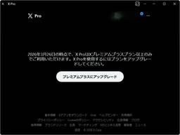
「X Pro」（TweetDeck）が突如「プレミアムプラス」プラン必須に、実質約6.5倍の値上げ／マルチカラム・リアルタイムなクライアントアプリ 29窓の杜
「X Pro」が突如「プレミアム」プランで利用できなくなった。米国時間3月26日より、「プレミアムプラス」プランが必要になるとのこと。
4日前

基本情報技術者試験をスキル棚卸しに使う - 45歳エンジニアが発見した意外な盲点 216 Findy Tech Blog
Findy Tech Blog
キャリアプロダクト開発部の森 ＠jiskanulo です。 私ごとですが今年で45歳、WEBサービスの開発歴は20年以上になります。世間的にはベテランエンジニアとかシニアエンジニアとかと称される類だと自認しています。 そんな私ですが2026年1月に基本情報技術者試験を受験して合格しました。 この記事は、ベテランエンジニアが基本情報技術者試験をスキル棚卸しツールとして活用した体験と、受験しなくても使えるセルフチェックの方法を紹介します。 www.ipa.go.jp 受験の動機 結果 得意と苦手が可視化された 得意だった領域 苦手だった領域 得意と苦手のコントラストが意味するもの 試験範囲でスキル…
4日前
キーボードに［Copilot］キーがない？ ならば自力で生やしてみよう 10窓の杜
Copilot+ PCの登場と合わせて、キーボードにも［Copilot］キーが追加されたのを覚えていらっしゃるだろうか。Windows PCに新たなキーが追加されるのは、Windows 95で［Windows］キーが追加されて以来、約30年ぶりの大きな変更だとされている。
4日前
「GitHub Copilot」個人ユーザーは要確認！ 拒否しないとAIの学習に利用されるように／「Copilot Free」「Copilot Pro」「Copilot Pro+」が対象 142窓の杜
米Microsoft傘下のGitHubは3月25日（現地時間、以下同）、「GitHub Copilot」のインタラクションデータ利用ポリシーを更新すると発表した。4月24日以降、オプトアウト（拒否）しない限り「Copilot Free」「Copilot Pro」「Copilot Pro+」ユーザーのインタラクションデータがAIモデルの学習・改善に利用されるようになる。
4日前
Jamf Connect × 内製IdP連携の全記録 - 2,100台のMacをOktaから移行して得た教訓 1 Blog on DeNA Engineering
Blog on DeNA Engineering
はじめに DeNA IT本部 IT戦略部 エンプロイーエクスペリエンスグループの佐藤元気です。 従業員が Mac をより安全かつシームレスに利用できるよう、日々、端末管理の最適化に取り組んでいます。今回は、Jamf Connect の認証基盤を従来の Okta から 内製 IdP へ移行したプロジェクトで設定方法や展開方法を紹介します。ネット上に情報が少ないなかでの設定の試行錯誤や、展開手法における「思わぬ落とし穴」との戦いもありました。同じように Jamf Connect のカスタム IdP 連携に挑む情シス担当者のみなさまの参考になれば幸いです。
4日前
3/26 (木)
人間がバグ修正でAIに負けた日 1 Hatena Developer Blog
Hatena Developer Blog
「バグ修正では負けても、面白ためになる記事の執筆なら負けん！」という気持ちで生成AIと人間が同じ出来事――人間がバグ修正でAIに負けた日――について記事を書きました。
4日前
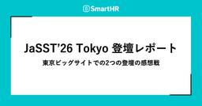
JaSST’26 Tokyo 登壇レポート —— 東京ビッグサイトでの2つの登壇の感想戦 SmartHR Tech Blog
はじめに 3/20（金）にJaSST’26 Tokyoが東京ビッグサイトで開催されました。 今回、ゴールドスポンサーとしてテクノロジーセッションを2枠いただいたので、次についての話をしてきました。 登壇１：開発チームとQAエンジニアの新しい協業モデル - 年末調整開発チームで実践する【QAリード施策】- higesawa, kaomiが登壇 登壇２：スケールアップ企業でQA組織が機能し続けるための組織設計と仕組み〜ボトムアップとトップダウンを両輪としたアプローチ〜 tarappoが登壇 開発チームとQAエンジニアの新しい協業モデル - 年末調整開発チームで実践する【QAリード施策】- spea…
4日前
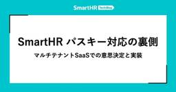
SmartHR パスキー対応の裏側 —— マルチテナントSaaSでの意思決定と実装 SmartHR Tech Blog
こんにちは。プロダクトエンジニアのutakahaです。 SmartHRでは、2025年12月9日にパスキーに対応しました。 smarthr.jp この記事では、パスキーに対応する際の意思決定や、実装時に困ったことなどを紹介します。 パスキーを導入した背景 SmartHRでは、従業員の大事な個人情報を扱っています。そのため、不正ログインを防ぐための対策を継続的に行っています。 これまでも、2要素認証を導入し、従業員に対して2要素認証を必須とする機能を提供してきましたが、次の一手として、利便性を高めつつ、セキュリティも強化できるパスキーに対応しました。 リリースから約3ヶ月経ち、すでに5,000社…
4日前
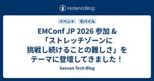
EMConf JP 2026 参加 &「ストレッチゾーンに挑戦し続けることの難しさ」をテーマに登壇してきました！ 1 Sansan Tech Blog
はじめに 技術本部 Sansan Engineering Unit Mobile Application GroupにてEM（エンジニアリングマネジャー）として活動している赤城です。 2026年3月4日、Engineering Manager（EM）に特化したカンファレンスである、EMConf JP 2026に登壇者として参加してきました。 初めてのカンファレンス登壇ということもあり、準備から当日まで大変なことも多かったのですが、終わってみれば「今まで参加したカンファレンスの中で一番充実していた」と感じるほど、濃い一日になりました。 この記事では、登壇準備の裏側から当日の緊張と手応え、印象に残…
4日前

OIDF-J 第2期 人材育成WG 下半期の参加レポート 〜総集編〜 5 freee Developers Hub
freee Developers Hub
こんにちは。IAM基盤エンジニアのハトンです。 以前の記事で、OpenIDファウンデーション・ジャパンのデジタルアイデンティティ人材育成推進WG フェーズ2における上半期の活動や、8月に開催された中間報告会についてご紹介していただきました。 OIDF-J 第2期 人材育成WG 上半期の参加レポート - freee Developers Hub 今回はその続編であり、1年間の活動の総集編として紹介させてもらいます。 下半期の活動について 下半期も引き続き、参加企業の方々とともにビジネスと技術の2つのサブグループのテーマごとに資料作成を進めていき、先日に1年の集大成となる最終活動報告会が開催されま…
4日前

Ruby 3.3.11がリリースされました 1 TechRacho
Ruby 3.3.11がリリースされました（CVE-2026-27820セキュリティ修正も含む）。 3.3系としては最後の通常リリースであり、以後はセキュリティ修正のみがリリースされます。 リリース情報: Ruby 3.3.11 Released | Ruby Just released Ruby 3.3.11.https://t.co/BRM9n4Kzl8Ruby 3.3 enters security maintenance phase today until end of March 2027. So, this is the final normal maintenance release. Please […]The post Ruby 3.3.11がリリースされました first appeared on TechRacho.
5日前
LLM-jp FT-LLMコンペに直球ど真ん中ストレートを投げ込んだ(つもりの)話 1 松尾研究所テックブログのフィード
松尾研究所の尾崎です．25卒でデータサイエンティストをやっています．本記事では，LLM-jp FT-LLMコンペティションにおける我々チームの取り組みをご紹介します．NLP2026で発表した論文「LLM-jp FT-LLMコンペにおける数学推論能力向上の取り組み」（尾崎・力岡・渡部・Jeong）の内容をベースに，ブログ向けに再構成しています．このコンペは，LLM-jpが主催するファインチューニングの公開コンペティションで，llm-jp-4-8b(2026/03/23現在未公開)をベースモデルとして，中学校・高等学校レベルの数学問題500問の正答率を競うというものです．推論時にはllm...
5日前
Virtual Thread Deep Dive - 内部実装からアンチパターンまで LINEヤフー Tech Blog (LY Corporation Tech Blog
Web バックエンドエンジニアの早坂です。本稿は、2025年11月に開催された JJUG CCC 2025 Fall における登壇「Virtual Thread Deep Dive」を記事としてまとめ...
5日前
Vol.14 Base UI × CSS Modules で始めるヘッドレスコンポーネント開発 Sansan Tech Blog
この記事は、Sansan Data Intelligence開発Unit ブログリレーのVol.14です。 こんにちは、技術本部Data Intelligence Engineering Unitの茂木です。 私たちのチームでは、取引先データの品質を高めて企業のDXを後押しするデータクオリティマネジメント「Sansan Data Intelligence」（以下SDI）のフロントエンドをNext.js (App Router) + TypeScriptで開発しています。SDIはデータの連係設定や取り込み指示といった管理機能が中心のプロダクトで、Select・フォーム・ダイアログなど、操作系のU…
5日前

CSSのlight-dark()関数が画像もサポート！ これでライトテーマとダークテーマの対応がさらに簡単になります 12 コリス
Webサイトをライトテーマとダークテーマ対応にするには、CSSのlight-dark()関数を使用すると今までより簡単に実装できます。 これまではlight-dark()関数はカラー値（<color>）のみし […]
5日前

壁などの空間を活かして通信エリアを広げる ― 6Gに向けた新しい“導波路”の考え方 ENGINEERING BLOG ドコモ開発者ブログ
はじめに 6Gテック部無線デバイス技術担当の松平です。 本記事は「電子情報通信学会(以下IEICE)総合大会参加レポート」シリーズの記事です。 ドコモでは研究・開発活動の一環として、IEICE総合大会に参加しました。研究発表やパネルディスカッション、講演などを通して、研究成果の共有や技術議論を行っています。 本記事では、その中でも「ミリ波などの高い周波数を使った通信を、より使いやすくするための新しい仕組み」に関する取組みをご紹介します。 この記事を読むと、次のようなことが分かります。 なぜ次世代通信では「高い周波数」が重要なのか 壁などの空間を活かして通信エリアを広げるアイデア 今後の通信サー…
5日前
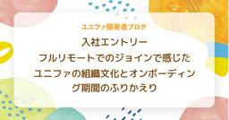
フルリモートでのジョインで感じたユニファの組織文化とオンボーディング期間のふりかえり ユニファ開発者ブログ
2026年1月にユニファへPdMとしてジョインした著者が、フルリモート環境下での激動の3ヶ月を振り返ります。PCセットアップでの苦戦から、同社の強固な「ドキュメント文化」を活用した自走プロセス、自ら提案したオンボーディング改善、そしてAI（RAG）を駆使した「ギャルパイセン」の開発まで。ベンチャー特有の「整いすぎていない自由さ」を楽しみながら、能動的な「Give」を通じて早期にプロジェクトリードを任されるに至るまでの、リアルな軌跡と仕事のスタンスを綴ります。
5日前
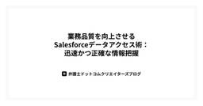
業務品質を向上させるSalesforceデータアクセス術：迅速かつ正確な情報把握 弁護士ドットコム株式会社 Creators’ blog
はじめに こんにちは、社内でSalesforceの開発・保守運用を担当しているシステム企画部のHです。 ご存知の方も多いかと思いますが、Salesforceは世界シェアNo.1のCRM（顧客関係管理）プラットフォームです。 そして、CRMの本質は「データの蓄積」とその「活用」にあります。 私たちが日々向き合っているのは、単なるレコードの羅列ではありません。そこにあるデータはビジネスの現状そのものです。 そのため、システムの改修や不具合調査を行う際、まず「現状のデータがどうなっているか」を深掘りすることから始めることが多いです。 データを見ていると、以下のようなシーンに遭遇します。 「なぜ、この…
5日前

【エンジニアの日常】エンジニア達の人生を変えた一冊 Part6 35 Findy Tech Blog
こんにちは。Findy AI+開発チームのdanです。 この記事は「エンジニア達の人生を変えた一冊」として、ファインディのエンジニアが人生を変えた本を紹介していくシリーズです。 一冊の技術書がきっかけで、新しい分野に足を踏み入れたり、日々のコードの書き方が変わったりした経験はありませんか？今回は私・danと、千田さんの2名が、自分にとって転機となった本をお届けします。 それでは、さっそく紹介していきましょう！ SREの知識地図——基礎知識から現場での実践まで この本を読んだきっかけ 本の内容 この本から影響を受けた点/学んだ点 特に印象に残った部分 このような方におすすめ 今気になってる本 リ…
5日前
3/25 (水)

マルチモーダルLLMハルシネーションを抑制する新技術：アテンション強化型ハルシネーション軽減 fltech - 富士通研究所の技術ブログ
こんにちは、富士通研究開発センター（FRDC）生成AI研究グループのLi Fei、Shi Zhiqiang、Wang Jingyiです。本日は、私たちが開発した「アテンション強化型ハルシネーション軽減技術」についてご紹介します。この技術は、主に画像もテキストも理解するAI（マルチモーダル大規模言語モデル、略してMLLM）が、間違った情報を生成してしまう「ハルシネーション」という課題を解決するためのものです。 この技術に関する3本の論文が、画像処理や信号処理の国際会議WACV 2026（IEEE/CVF Winter Conference on Applications of Computer …
5日前

事業戦略を日々の開発につなぐチームキックオフの実践 SmartHR Tech Blog
こんにちは。SmartHRでプロダクトエンジニアをしているkuriharaです。私は、タレントマネジメント領域の「キャリア台帳」を開発するチームで、プロダクトづくりに取り組んでいます。 先日、タレントマネジメント事業部全体のキックオフが実施されたのですが、それとは別にチームキックオフを行いました。 本記事では、そのチームキックオフで取り組んだ内容を紹介します。 キックオフの目的 期初は、目の前の開発タスクだけでなく、チームで「何を目指すのか」「なぜそれをやるのか」「どうやって進めるのか」という問いに向き合う重要なタイミングです。一方で、日々の忙しさの中では、課題に対する方向性をチームで話し合っ…
5日前
Webフロントエンドやモバイルアプリからのトレースの投稿に利用できるクライアントトークンをリリースしました ほか7件のアップデート 3 Mackerel ブログ #mackerelio
こんにちは！Mackerel チーム CRE の戸谷（id:KGA）です。今回のアップデート内容をお知らせいたします。 Webフロントエンドやモバイルアプリからのトレースの投稿に利用できるクライアントトークンをリリースしました トレース課題通知のスヌーズ解除までの残り時間が確認できるようになりました トレース課題のSlack通知連携の設定場所を課題一覧配下に移動しました AzureインテグレーションでAzure Front Doorのメトリックを取得できるようになりました オーガニゼーション一覧でオーガニゼーション名や管理名で絞り込みができるようになりました ホスト詳細画面のページタイトルにホ…
5日前

Vol.13 複雑さに立ち向かう軽量Spec駆動開発 Sansan Tech Blog
この記事は、Sansan Data Intelligence 開発Unit ブログリレー の第13弾です。こんにちは、技術本部 Data Intelligence Engineering Unitのしゅん（@MxShun）です。弊社では「SOCv2」と呼ばれるMaster Data as a Service (MDaaS)の構築を進めています。SOCv2が生まれる背景になった課題やアーキテクチャ全体像は、先日の永井の記事 Vol.03 SOCv2: MasterData as a Service (MDaaS) 10年もののSystemを作り替える をご参照ください。 今回は、複雑なSOCv2…
5日前

デザイナーとPdMが「一つの組織」になって1年。職能の壁を溶かして見えた、プロダクト開発の真の価値 1 RAKUS Developers Blog | ラクス エンジニアブログ
RAKUS Developers Blog | ラクス エンジニアブログ
こんにちは、プロダクト部 部長の稲垣です。（自己紹介やこれまでのキャリアについて↓をご覧ください。） tech-blog.rakus.co.jp デザイナーとプロダクトマネージャー（PdM）が同じ組織になってもうすぐ1年が経ちますので、その挑戦、苦労、変化について書こうと思います。ラクスは3月末決算のため4月には来期に向けて取り組みを書こうと思いますが本記事は厚めに振り返ります。 組織図を書き換え、デザインを解放する なぜ統合が必要だったのか：「上流×一次情報×検証」が欠けると、協働は痩せていく デザインの再定義：それは「問題を解決するための設計」である 壁を壊すだけでは足りない：一次情報・意…
5日前

Rails 8.1.3と8.0.5がリリースされました 1 TechRacho
Ruby on Rails 8.1.3と8.0.5ががリリースされました。内容はバグ修正です。 リリース情報: Rails Versions 8.0.5 and 8.1.3 have been released! 昨日リリースされたセキュリティ修正もこれらに含まれています。 Rails セキュリティ修正8.1.2.1/8.0.4.1/7.2.3.1がリリースされました Rails Versions 8.0.5 and 8.1.3 have been released! https://t.co/7t97zQtHLb — Ruby on Rails (@rails) March 24, 2026 英語版 […]The post Rails 8.1.3と8.0.5がリリースされました first appeared on TechRacho.
6日前
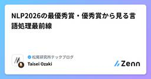
NLP2026の最優秀賞・優秀賞から見る言語処理最前線 13 松尾研究所テックブログのフィード
松尾研究所の尾崎です．25卒でデータサイエンティストをやっています．2026年3月9日から13日にかけて，栃木県宇都宮市のライトキューブ宇都宮にて言語処理学会第32回年次大会（NLP2026）が開催されました．NLP2025（長崎）に引き続き過去最大規模の記録更新が続いており，LLMブーム以降の自然言語処理分野の勢いを肌で感じました．NLP2026の看板．会場はライトキューブ宇都宮．今年度から尾崎はYANS(言語処理若手シンポジウム（YANS）)の運営委員に就任しましたので，来年以降もNLPには継続で参加します．皆さんとお会いできるのを楽しみにしています．YANSへのご参加もぜひ...
6日前

ユーザーレビューサービスにおける通報機能の段階的導入 DMM Developers Blog
はじめに 背景と課題 背景 従来の対応と限界 課題の整理 対応方針：Phase分けによる段階的導入 Phase分けの全体像 Phase1:通報の登録(PoC) 実装の進め方 Phase1の特徴 Phase2：管理画面での通報管理 実装の進め方 Phase2で実装した機能 実装時に気をつけたこと 導入支援資料の作成 プロジェクト全体の効果と今後の課題 データ分析から見えた効果 見えてきた課題 今後に向けた方針 まとめ 得られた知見 はじめに こんにちは。プラットフォーム開発本部 第一開発部 ユーザーレビューグループの富澤です。 DMMのユーザーレビューサービスを支えるバックエンドチームで、システ…
6日前

ZOZOFIT Androidで進めたMVVMからMVIへの移行と独自MVIライブラリの開発 16
ZOZO TECH BLOG
はじめに こんにちは。グローバルプロダクト開発本部 グローバルアプリ部 アプリ基盤ブロックの桂川です。普段はZOZOFIT・ZOZOMETRYなどの計測アプリのAndroid開発に携わっています。本記事ではZOZOFITのAndroidアプリで取り組んだMVVMからMVIへの移行と、独自MVIライブラリの開発について紹介します。なお、独自MVIライブラリを使ったMVIアーキテクチャへの移行は2024年9月に開始しました。
6日前
さくらの高火力 PHYを利用した分散推論基盤の性能検証 〜高火力 PHYで作る分散推論基盤 vol.3〜 1 さくらのナレッジ
さくらのナレッジ
はじめに さくらインターネットで高火力 PHYチームに所属している道下です。 本連載では、高火力 PHYで利用しているサーバーと同種のGPUサーバーを利用し、近年注目度を増しているLLMの分散推論基盤技術に関して詳細な技 […]
6日前

ゲーム開発を支えるワークロードID連携 COLOPL Tech Blog
こんにちは。運用基盤グループでビルドシステムの開発・運用を担当している会津です。 この記事では、ゲーム開発における自動化の仕組みづくりと、「マシンやサービス同士の連携をどう安全に行うか」という課題についてお話しします。 また、この課題への我々の取り組みの中で、現在検証と開発を進めている最新情報について紹介します。 最初に、この記事で出てくる用語を簡単に説明しておきます。 用語 ざっくり言うと ワークロード 人ではなく、マシン上で動いているプログラムやサービスのこと ワークロードID そのプログラムやサービスに割り当てられたID 短期トークン 一時的に使える「通行証」のようなもの。短期間(数分～…
6日前

Qiitaニュース | CLAUDE.mdを設計するとClaude Codeの生産性が別物になる — 実際の設定と運用ワークフローを公開 Qiita Zine
2026/03/25に配信された Qiitaニュースのバックナンバーです。 Dear great hackers, こんにちは！いつもQiitaをご利用いただきありがとうございます。 先週いいねが多かった投稿ベスト20( […]投稿 Qiitaニュース | CLAUDE.mdを設計するとClaude Codeの生産性が別物になる — 実際の設定と運用ワークフローを公開 は Qiita Zine に最初に表示されました。
6日前

商用利用OKの無料版もあるぞ！ レトロな雰囲気がかわいい、極太の日本語フォント「鳩とブリキのワンダランド」 2 コリス
「はんなり明朝」「こころ明朝体」「こども丸ゴシック」などのフリーフォント、最近では「ビルと谷間と高架下」「そばとうどん」などをリリースしているTyping Artさんから、新作の日本語フォント「鳩とブリキのワンダランド」 […]
6日前

隣の会社のEMも、同じことで悩んでいた─EMConf 2026 freeeスポンサーレポート 10 freee Developers Hub
正解がない。相談できる人も少ない。それでも意思決定を続けなければならない。 Engineering Manager（EM）という役割を担っていると、そんな場面に何度も直面します。freeeのEMたちも例外ではありません。「任せると丸投げの境界線がわからない」「デリバリーに集中するあまり、気づけば視野が狭まっていた」日々そんな悩みを抱えながら、それでも考え抜くことをやめない人たちが、freeeには集まっています。でも、その悩みはfreeeだけのものではありませんでした。 freee は2026年 EMConf（Engineering Management Conference Japan）にプラ…
6日前

DropboxからGoogleドライブへのデータ移行を検証してみた G-gen Tech Blog
G-gen の三浦です。当記事では、Google が提供する標準機能を使って、Dropbox から Google ドライブへのデータを移行した検証の結果を紹介します。 概要 Dropbox からのデータ移行とは 前提条件 制約 検証概要 検証環境 検証の流れ 設定手順 [Dropbox] 移行元のチームフォルダ Path の確認（チームフォルダを移行する場合のみ） [Google Workspace] 移行先の共有ドライブ ID の確認（チームフォルダを移行する場合のみ） [Google Workspace] 移行用の CSV の準備 [Google Workspace] データ移行の実施 個…
6日前

2026年 Global Net Workshop（GNW）にドコモが参加してきました！ 〜ドコモからの発表と得られた学び〜 ENGINEERING BLOG ドコモ開発者ブログ
はじめに 本記事は「電子情報通信学会(以下IEICE)総合大会参加レポート」シリーズの記事です。 ドコモでは研究・開発活動の一環として、IEICE総合大会に参加しております。研究発表やパネルディスカッション、講演などを通して、研究成果の共有や技術議論を行っています。 本記事では、その中でも「2026年3月9日に開催された、電子情報通信学会 総合大会のGlobal Net Workshop (GNW)」に関する取組みをご紹介します。 筆者はNTTドコモ 6Gテック部の黒岩 史登、林 悠眞です。 今回は、日頃取り組んでいる3GPPの標準化活動の中で得られた知見の整理・発信に加え、英語でのプレゼンテ…
6日前

問い合わせに答えても困りごとは消えない - CRE の課題整理の考え方と Agent Skills への展開 弁護士ドットコム株式会社 Creators’ blog
問い合わせは症状、困りごとは奥にある。WHO・WHAT・影響・発生条件を起点に課題を構造化する CRE の考え方と Agent Skills 実装を紹介。
6日前

実験して入門するKubernetes：Pod起動の裏側を追っていたら、どうしてもSchedulerを止めてみたくなった件  フューチャー技術ブログ
フューチャー技術ブログ
<img src="/images/2026/20260325a/top.jpg" alt="" width="1024" height="572"><h1 id="はじめに"><a href="#はじめに" class="headerlink"
6日前
3/24 (火)
OpenClaw-RLで学ぶAgentic RLの報酬設計 15 LayerX エンジニアブログ
はじめに こんにちは！LayerXのバクラク事業部で機械学習エンジニアをしている宇都(@kuto_bopro)です。最近エージェントに関する論文を読んでいると「Self-Evolving」というキーワードを持つ論文をよく目にします。Self-Evolvingは自己進化・自己改善を意味しており、自動で性能が上がっていくAIエージェントの文脈で使われます。 A Survey of Self-Evolving Agents, Figure3より引用 arxiv.org 上記のサーベイ論文で、 Self-Evolving Agentに関して整理されており、エージェントの進化対象(What)はコンテキス…
6日前

PHPerKaigi 2026 登壇 & 参加レポート 1
freee Developers Hub
こんにちは！フリーナンスのエンジニアをやっているthe よしだです！ 今回は2026年3月20日(金)から22日(日)に中野セントラルパーク カンファレンスで開催された「PHPerKaigi 2026」に登壇 & 参加してきました！ 登壇では私がどんな内容を話したのか、他にはどんなトークがあったのか紹介していきたいと思います！ 登壇内容 今回私は、「Laravelで学ぶOAuthとOpenID Connectの基礎と実装」というテーマを話してきました！ speakerdeck.com 今回のテーマを選んだきっかけとして、昨年9月にフリーナンスがfreeeへのジョインしたことが挙げられます。 フ…
6日前
ラクスの社内テックカンファレンス「Rakus Tech Conference for Us 2026」 を開催いたしました。 2 RAKUS Developers Blog | ラクス エンジニアブログ
こんにちは、ラクスの技術広報です。 2026年2月20日（金）、ラクスの社内テックカンファレンス「Rakus Tech Conference for Us 2026」 を開催いたしました。 組織が拡大し、それぞれのプロダクトや職種の専門性が高まる中で、いかに「横の繋がり」を強め、新たな価値を生み出すか。熱気に包まれた当日の様子をレポートします。 開催の背景とテーマ：『Synergies』（シナジー） 多彩な8セッション：技術の先にある「協働」を語る 発表内容 【セッションラインナップ】 イベント後に寄せられた感想（抜粋） アフターイベント：東京・大阪の2拠点で同時開催 開催を終えて
6日前
閉域網を利用してPLCへリモート接続してみた IIJ Engineers Blog
導入 近年、人手不足や技術者の高齢化への対応、生産性向上や品質管理の高度化を目的として、製造業では設備のデジタル化・リモート化が注目されています。 実際に、経済産業省が公表している「2024年版ものづ...
6日前
瞳に映るスマホ画面から指の位置がわかる？タッチレス操作技術「ReflecTrace」 2LINEヤフー Tech Blog (LY Corporation Tech Blog
こんにちは。LINEヤフー研究所でHuman-Computer Interaction（HCI）の分野の研究をしている池松です。皆さんはスマートフォン（以下、スマホ）でレシピを見ながら調理しているとき...
6日前
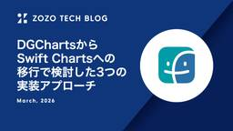
DGChartsからSwift Chartsへの移行で検討した3つの実装アプローチ 4 ZOZO TECH BLOG
はじめに こんにちは、FAANS部フロントエンドブロックの加藤です。普段はFAANSのiOSアプリを開発しています。FAANSは、ショップスタッフの販売サポートツールであり、アプリ上でコーディネートの投稿や売上などの成果を確認できます。 成果の確認画面では以下の動画のように成果を棒グラフで可視化しています。これまでFAANS iOSでは、棒グラフの生成にサードパーティライブラリであるDGChartsを用いていました。一方で、FAANSではiOS 15のサポートを終了しているため、iOS 16以上で利用可能なApple標準のグラフ生成フレームワーク「Swift Charts」を利用できます。そこ…
6日前

チーム外からの問い合わせ対応、私はこうしてます 4 SmartHR Tech Blog
こんにちは！ 給与計算チームでプロダクトエンジニアをしている teruya です！ みなさんはチーム外からの問い合わせ対応をしていますか？ 問い合わせ対応にはコードを書くのとは似て非なるスキルが必要なのが難しいところですが、ひとつひとつの問い合わせの背景を理解し、原因を特定し解決策を導く過程はまさに問題解決そのものであり、慣れてくるとだんだん面白くなってきます。 本稿では、チーム外からやってくる問い合わせへの対応の方法としてひとつの作法を提示します。 問い合わせ対応の何が難しいのか SmartHRの各プロダクトには、お客様からのテクニカルなお問い合わせを開発チームで調査・対応する場があります。…
6日前

Rails セキュリティ修正8.1.2.1/8.0.4.1/7.2.3.1がリリースされました 1
TechRacho
Ruby on Rails セキュリティ修正8.1.2.1、8.0.4.1、7.2.3.1がリリースされました。 リリース情報: Rails Versions 7.2.3.1, 8.0.4.1, and 8.1.2.1 have been released! 総計で10件のセキュリティ修正が行われています。 Action Pack: 1件 Action View: 1件 Active Support: 3件 Active Storage: 5件 Ruby on Rails: Compress the complexity of modern web apps ➜ Rails Versions 7.2.3.1, 8 […]The post Rails セキュリティ修正8.1.2.1/8.0.4.1/7.2.3.1がリリースされました first appeared on TechRacho.
7日前
【入社エントリ】新卒で松尾研究所に入社しました 松尾研究所テックブログのフィード
はじめまして、株式会社松尾研究所に2025年度新卒入社いたしました橋本です。2025年4月に入社して、もうすぐ1年が経ちます。入社エントリを書こうとはずっと思っていました。ただ、書こうとするたびに、自分の中にまだ定まっていないものがあると感じ、筆を置いてしまっていました。1年経つ今も、それは定まっていません。それでも、定まらないままでも、わからないままでも書いていいのだろうと思うようになり、新卒の肩書が剥がれてしまうこの砌で書き留めることにしました。本稿は、明快な決意や何かの答えを差し出す文章ではありません。データサイエンティストとして1年を過ごした自分が、今この時点で考えている...
7日前

「圧倒的なドメイン知識×デジタル」で一気通貫のDXに伴走。日立製作所のコンサルティング部隊が熱い！ Qiita Zine
「日立製作所といえば家電・メーカー」というイメージを持つ方もいらっしゃるかもしれません。しかし今、特定の業界で培われた専門性（ドメインナレッジ）をデジタルで最大化させ、顧客の課題解決を推進する「コンサルティング部隊」への […]投稿 「圧倒的なドメイン知識×デジタル」で一気通貫のDXに伴走。日立製作所のコンサルティング部隊が熱い！ は Qiita Zine に最初に表示されました。
7日前

言語処理学会第32回年次大会(NLP2026)に参加しました Sansan Tech Blog
こんにちは。研究開発部の佐藤です。2026年3月9日(月)から3月13日(金)にかけて、栃木県のライトキューブ宇都宮にて言語処理学会第32回年次大会(NLP2026)が開催されました。弊社からは、プラチナスポンサーとして佐藤・齋藤・橋本・大田尾・Loem・根本の6名のメンバーが現地で参加し、スポンサーブースの出展と5名によるポスター発表をしました。本ブログではその様子をお伝えします。
7日前

UIに使用する色のコントラストをAIで検証、基準を満たしていないときはデザインに合った代替色を提案してくれる無料ツール 20 コリス
AIを使用して前景色と背景色のコントラスト、WCAG 2.1および2.2のAA/AAA基準を満たすアクセシブルな色の組み合わせをテストし、さらにその組み合わせに合った色で基準に満たした色も提案してくれる無料ツールを紹介し […]
7日前
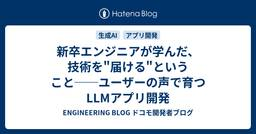
新卒エンジニアが学んだ、技術を"届ける"ということ──ユーザーの声で育つLLMアプリ開発 ENGINEERING BLOG ドコモ開発者ブログ
上司-「どんなことやってみたい?」 私-「学生時代にLLMに関する研究をやっていたので、それに関連するプロダクトを作ってみたいです」 こんなやり取りから私の開発は始まりました。新卒1年目の私が挑んだのは、「Vertex AI Gemini」を活用したナレーション付き動画自動生成アプリの開発です。入社してすぐのプレッシャーを感じつつも、主体的にプロダクトを開発できる。技術者としての第一歩のワクワクする挑戦でした。 しかし、技術的な興味だけで突き進んだ先には、「ただ動くだけでは、課題解決にならない」といった壁がありました。 実際にユーザーにヒアリングしてみると、想像していた以上に多様で具体的なニー…
7日前
【キャリア採用者が語る】標準化で即戦力として活躍できる環境の魅力！ ENGINEERING BLOG ドコモ開発者ブログ
初めまして。NTTドコモ ６Gテック部の成です。 私は2025年10月にキャリア採用でドコモに入社し、現在はモバイル通信の標準化、特に3GPPにおける標準化活動を担当しています。主にRAN1を担当しており、今年2月には初めてNTTドコモの代表としてスウェーデン・ヨーテボリで開催されたRAN1#124会合に現地参加しました。 モバイル通信や3GPPの標準化がどのような仕事かについては、こちらの記事(ドコモの標準化の仕事と、知的財産への取組み - ENGINEERING BLOG ドコモ開発者ブログ)でも詳しく紹介されています。本記事では、3GPP標準化活動を中心に、私自身の経験から感じたドコモの…
7日前

Claude Code / CursorのHooksで実装した AIエージェントの3層プロンプトインジェクション対策
109 弁護士ドットコム株式会社 Creators’ blog
Claude Code / Cursor の Hooks で実装した、AIエージェント向け3層のプロンプトインジェクション対策と運用設計を紹介します。
7日前
インターンシップから入社、Black Hat Europe登壇までの道のり 5 NTT docomo Business Engineers' Blog
こんにちは、イノベーションセンターの松本です。普段はOffensive Securityプロジェクトのメンバーとして攻撃技術の調査・検証に取り組んでいます。 この記事では、我々のチームで開発したレッドチームフレームワーク「GHARF (GitHub Actions RedTeam Framework)」に関する取り組みと、筆者が学生時代に参加したインターンシップから入社を経てBlack Hat Europe 2025のArsenalで登壇するまでに至った道のりについて紹介します。 はじめに インターンシップ記事から2年 本記事の目的と概要 Offensive Securityプロジェクトの紹介…
7日前